🧙 魔骑士
Mage Knight Board Game · 设计：Vlaada Chvátil · WizKids 出版 · 1–5 人 · 官方英文规则书全文翻译（24 页 · AI 辅助机翻）
本页为《魔骑士》（Mage Knight Board Game, 2011）官方英文规则书的全文中文翻译，底本为 WizKids 官方（MKUE%20Rulebook%20BOOKLET.pdf，24 页），整本译出、未删节，原版规则书页面随文嵌入——点击任意图片即可放大查看。规则内容归 WizKids 及版权方所有，译文仅供个人学习查阅。
整理说明：本页由 AI 辅助机翻整本规则书并按本站术语口径对齐（牌库/手牌/回合/轮/板块/指示物等），数字与费用逐段保留原文口径；如对规则细节有疑问，请以随文原书页面或上方官方原文 PDF 为准。每页译文上方为对应的原版规则书页面。
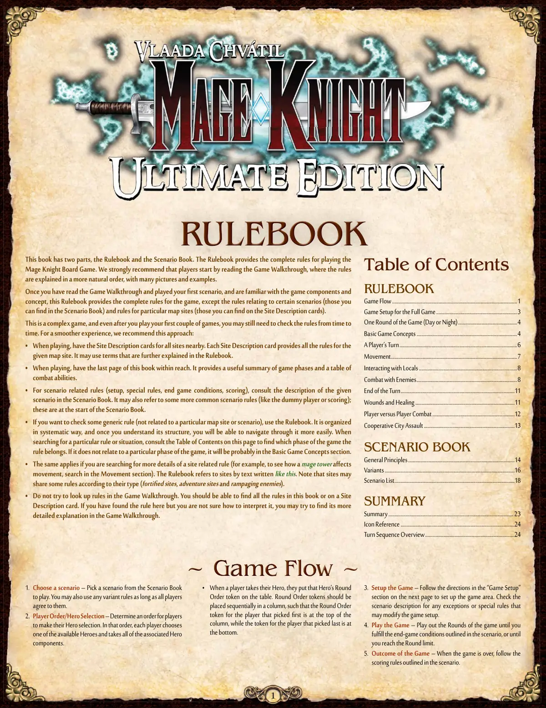
- 选择一个场景 – 从场景书中选择一个场景进行游戏。只要所有玩家同意，你也可以使用任何变体规则。
- 玩家顺序/英雄选择 – 确定玩家选择英雄的顺序。按照该顺序，每位玩家选择一个可用的英雄，并拿取所有相关的英雄组件。
• 当玩家选择他们的英雄时，将该英雄的回合顺序指示物放在桌上。回合顺序指示物应按顺序垂直放置，使得先选的玩家的回合顺序指示物位于列的顶部，而后选的玩家的指示物位于底部。
- 设置游戏 – 按照下一页"游戏设置"部分的说明设置游戏区域。查看场景描述，了解可能修改游戏设置的任何例外或特殊规则。
- 进行游戏 – 进行游戏的回合，直到你满足场景中概述的游戏结束条件，或者达到回合限制。
- 游戏结果 – 当游戏结束时，按照场景中概述的计分规则进行计分。
目录
规则书
游戏流程 ......................................................................................................1
完整游戏的游戏设置 ..................................................................3
游戏的一个回合（白天或夜晚） ................................................4
基本游戏概念 ..................................................................................4
玩家的回合 ................................................................................................6
移动 .......................................................................................................7
与当地人互动 ................................................................................8
与敌人战斗 ..................................................................................8
回合结束 .............................................................................................11
创伤与治疗 .................................................................................11
玩家对战玩家 ...................................................................12
合作城市突袭 ..........................................................................13
场景书
基本原则 .......................................................................................14
变体 ..........................................................................................................16
场景列表 ..................................................................................................18
概述
概述 ......................................................................................................23
图标参考 .............................................................................................24
回合顺序概述 .........................................................................24
T
规则书
规则书
规则书
~ 游戏流程
游戏流程
游戏流程 ~
本书分为两部分：规则书和场景书。规则书提供了《魔法骑士桌面游戏》的完整规则。我们强烈建议玩家先阅读游戏流程指南，其中规则以更自然的顺序解释，并配有大量图片和示例。
阅读完游戏流程指南并完成第一个场景后，当你熟悉了游戏组件和概念，本规则书将提供游戏的完整规则，但某些场景的规则（你可以在场景书中找到）和特定地图地点的规则（你可以在地点描述卡上找到）除外。
这是一款复杂的游戏，即使在你玩过前几局游戏后，你可能仍需要不时查阅规则。为了获得更流畅的游戏体验，我们推荐以下方法：
• 游戏时，将所有地点的地点描述卡放在附近。每张地点描述卡提供了该地图地点的所有规则。它可能使用了在规则书中进一步解释的术语。
• 游戏时，将本书的最后一页放在手边。它提供了游戏阶段的有用摘要和战斗能力表。
• 对于与场景相关的规则（设置、特殊规则、游戏结束条件、计分），请查阅场景书中给定场景的描述。它也可能引用一些更常见的场景规则（如虚拟玩家或计分）；这些规则位于场景书的开头。
• 如果你想查看一些通用规则（与特定地图地点或场景无关），请使用规则书。它以系统化的方式组织，一旦你理解了其结构，就能更轻松地浏览它。当查找特定规则或情况时，请查阅本页的目录，找出该规则属于游戏的哪个阶段。如果它与游戏的特定阶段无关，它很可能在基本游戏概念部分。
• 如果你正在查找与地点相关的规则的更多细节（例如，要了解法师塔如何影响移动，请在移动部分中查找），规则书通过这样书写的文本来引用地点。请注意，地点可能
• 根据类型分享一些规则（要塞地点、冒险地点和横冲直撞的敌人）。
• 不要试图在游戏攻略中查找规则。你应该能够在这本书中或在地点描述卡牌上找到所有规则。如果你在这里找到了规则，但不确定如何解释它，你可以尝试在游戏攻略中找到它更详细的解释。
其盾牌指示物未被选中的玩家留在那里，没有人赢得游戏。
ONE TO RETURN
• 玩家数：2人或4人（两个团队）
• 类型：极具竞争性
• 长度：四轮（4人游戏），六轮（2人游戏）
• 目的：一个极具竞争性的场景，充满了英雄们互相战斗的机会。以控制地点获得胜利点数，而非声望！
你被虚空议会派往这个有问题的省份...嗯...准确地说...是由...呃...虚空议会的正直成员们...派去夺取对该地区的控制权。但要小心，还有另一派背叛的议会成员想要控制该地区。不要让他们得逞！
地图（适用于2、3或4人游戏）
• 地图形状：预定义。
见图片。使用起始板块的B面，三张已揭示的乡村板块，以及另外两张乡村板块和四张核心板块可以揭示的预定义位置（你可以在设置游戏时将它们面朝下放在那里）。
• 乡村板块：5张（所有带有堡垒和法师塔的板块）。
• 核心城市板块：1张（总是白色城市）
• 核心非城市板块：3张（所有带有堡垒和法师塔的板块）。
• 城市：城市原本是友好的，但它关闭了城门。你不被允许进入。
• 单位：从精英单位牌库中移除四级单位（只能在城市中招募的单位）。
特殊规则
• 仅在游戏前半阶段分发常规（银色）单位。在游戏后半阶段分发常规单位和精英单位（在四人游戏中从第3轮开始，在三人游戏中从第4轮开始）。
• 可以在修道院招募的单位也可以在法师塔中招募。可以在村庄招募的单位也可以在城堡中招募。
• 在此场景中，攻击城堡和塔不会损失声望。
• 法师塔的工作方式与正常情况不同；在此场景中，它们的工作方式类似于城堡。
– 当你征服一座法师塔时，你不会获得法术。你仍然可以稍后在那里购买法术。
– 当你征服一座法师塔时，它就像城堡一样成为你的财产。其他玩家可以攻击它，就像攻击城堡一样：他们对抗随机抽取的强化紫色敌人，获得一半的声望（向上取整）。
– 如果你的回合开始于你的法师塔内或旁边，你会在白天获得每个你控制的法师塔的一点金色法力，或在夜晚获得一点黑色法力。
• 当你靠近你的城堡和法师塔时，你可以同时受益于两者！
• 在第二个白天和夜晚，当你攻击另一个玩家拥有的城堡或塔时，你会抽取两张随机的灰色（针对城堡）或紫色（针对法师塔）敌人指示物。击败它们获得的总声望相加然后减半（向上取整）。
• 在第三个白天和夜晚（在2人游戏中），同样
applies，只不过你摸三张牌。
团队规则
• 如果四人游戏，团队规则适用（参见变体部分）。
• 特别注意这条规则（来自变体部分）：玩家可以进入其盟友拥有的城堡，并且可以在那里招募单位。当在或靠近盟友的城堡时，他们的手牌上限也会增加，但仅限于他们自己拥有的城堡（如果有）。
• 这同样适用于法师塔和额外法力值。
获胜者
该场景会一直进行到达到轮次限制，或直到一方承认另一方获胜。每个拥有的城堡计为3个胜利点。每个拥有的法师塔计为2个胜利点。拥有最多分数的玩家或团队赢得游戏。如果平局（即，由于游戏中总共可获得25分，一些地点未被征服），则没有获胜者。
变体
• 为了更具策略性的游戏，你可以从一开始就揭示地图板块（如果你不想错过探索的刺激）。
• 你也可以用3名玩家玩这个场景，但它可能会遭受"如果两人互相争斗，第三人受益"的综合征。如果你仍然想这样玩，我们建议只进行四轮，就像在4人游戏中一样。
征服与占领
WizKids/NECA, LLC
603 Sweetland Ave.
Hillside, NJ 07205 USA
www.wizkids.com
© 2018 WizKids/NECA, LLC. WizKids及相关标志和logo是WizKids的商标。保留所有权利。
规则书编辑：Gaming Rules! - Paul Grogan & Phil Pettifer
测试玩家：Filip, David, Hanka, Miloš, Aneken, Vítek, Kreten, Fanda,
Michal, Flygon, Paul, Falco, Glee, Rumun, Monča, Ese, Yuyka, Jéňa, Bianco, Jirka
Bauma，以及来自捷克共和国、美国和英国的其他许多人。
特别感谢：Filip Murmak的热情帮助，从他们第一次了解游戏到游戏印刷的整个过程中都提供了宝贵的帮助。David Korejtko进行了数小时的测试和平衡。Paul Grogan、Philip Pettifer和朋友们进行了无数个日夜（和夜晚）的规则校对和语言修正。WizKids的Bryan Kinsella和Wilson Price提供了帮助和宝贵建议。WizKids和捷克游戏版社进行了广泛的测试支持。
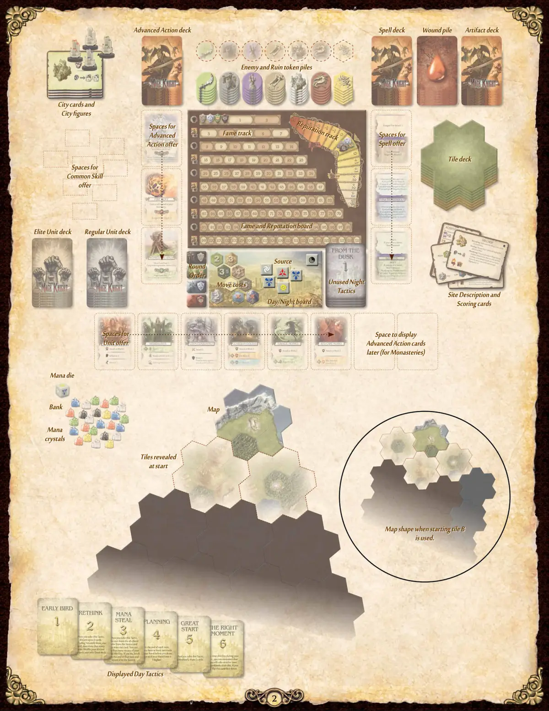
来源
移动费用
昼夜版图
敌人和废墟指示物堆
高级行动牌库
法术牌库
伤势堆
神器牌库
法术提供区域
板块牌库
地点描述和
计分牌
城市牌和
城市棋子
用于展示
高级行动牌的区域
（用于修道院）
展示的日间战术
当起始板块B被使用时的地图形状
起始时揭示的板块
法力骰
法力
水晶
银行
地图
单位提供区域
高级
行动提供区域
普通技能
提供区域
常规单位牌库
轮次
顺序
精英单位牌库
声望和名誉版图
声望轨道
名誉轨道
未使用的夜间
战术
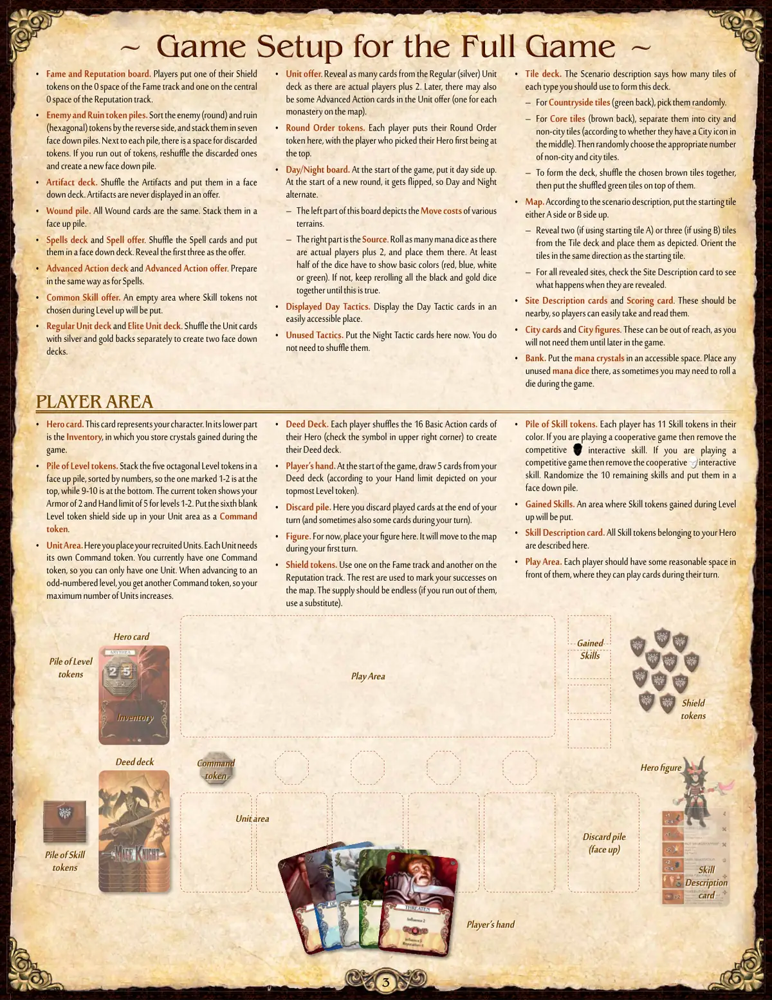
• 声望与名誉版图。玩家将一个他们的盾牌指示物放在声望轨道的0格，并将另一个放在名誉轨道中央的0格。
• 敌人与废墟指示物堆。按背面整理敌人（圆形）和废墟（六边形）指示物，并将它们叠成七面朝下的堆。每个堆旁边有一个用于放置被弃置指示物的位置。如果指示物用完，将弃置的指示物重新洗牌，并创建一个新的面朝下的堆。
• 神器牌库。洗混神器牌并将它们放入一个面朝下的牌库。神器牌永远不会在交易区中展示。
• 伤势堆。所有伤势牌都是相同的。将它们叠成一个面朝上的堆。
• 法术牌库与法术交易区。洗混法术牌并将它们放入一个面朝下的牌库。展示前三张作为交易区。
• 高级行动牌库与高级行动交易区。以与法术牌相同的方式准备。
• 普通技能交易区。一个未使用区域，用于放置升级阶段未被选择的技能指示物。
• 常规单位牌库与精英单位牌库。分别洗混银色和金色背面的单位牌，创建两个面朝下的牌库。
• 单位交易区。从常规（银色）单位牌库中展示与实际玩家数量加2一样多的牌。之后，单位交易区中也可能有一些高级行动牌（地图上每个修道院各一张）。
• 回合顺序指示物。每个玩家将他们的回合顺序指示物放在这里，第一个选择英雄的玩家位于顶部。
• 白天/黑夜版图。游戏开始时，将其白天面朝上放置。在新回合开始时，将其翻转，因此白天和黑夜交替。
– 这个版图的左侧部分描绘了各种地形的移动成本。
– 右侧部分是源泉。掷出与实际玩家数量加2一样多的魔力骰子，并将它们放在那里。至少一半的骰子必须显示基础颜色（红色、蓝色、白色或绿色）。如果不是，一起重新掷所有黑色和金色骰子，直到满足此条件。
• 展示的白天战术。将白天战术牌放在一个容易取用的地方展示。
• 未使用的战术。现在将黑夜战术牌放在这里。你不需要洗混它们。
• 板块牌库。场景描述说明了应该使用每种类型的多少板块来组成这个牌库。
– 对于乡村板块（绿色背面），随机选择。
– 对于核心板块（棕色背面），将它们分为城市和非城市板块（根据中间是否有城市图标）。然后随机选择适当数量的非城市和城市板块。
– 组成牌库时，将选定的棕色板块洗混，然后将洗混的绿色板块放在它们上面。
• 地图。根据场景描述，将起始板块的A面或B面朝上放置。
– 从板块牌库中揭示两块（如果使用起始板块A）或三块（如果使用B）板块，并按照图示放置它们。将板块的方向与起始板块保持一致。
– 对于所有揭示的地点，查看地点描述卡，了解它们被揭示时会发生什么。
• 地点描述卡和计分卡。这些应该放在附近，以便玩家可以轻松拿取和阅读。
• 城市卡和城市人物。这些可以放在远处，因为直到游戏后期你才需要它们。
• 银行。将法力水晶放在一个可触及的区域。将任何未使用的法力骰子放在那里，因为有时你可能在游戏过程中需要掷骰子。
• 英雄卡。这张卡代表你的角色。在其下半部分是物品栏，你在其中存储游戏过程中获得的水晶。
• 等级指示物堆。将五个八角形等级指示物按数字排序，正面朝上堆叠，标记为1-2的放在顶部，9-10的放在底部。当前指示物显示你在1-2等级时的2点护甲和5点手牌上限。将第六张空白等级指示物盾牌面朝上放在你的单位区域作为指挥指示物。
• 单位区域。在这里放置你招募的单位。每个单位都需要自己的指挥指示物。你目前有一个指挥指示物，所以只能有一个单位。当晋升到奇数等级时，你会获得另一个指挥指示物，因此你的单位最大数量会增加。
• 行动牌库。每位玩家将自己英雄的16张基础行动卡（检查右上角的符号）洗牌，创建自己的行动牌库。
• 玩家手牌。游戏开始时，从你的行动牌库中抽取5张牌（根据你最上方等级指示物上显示的手牌上限）。
• 弃牌堆。在这里你在回合结束时弃置已打出的牌（有时也在你的回合期间弃置某些牌）。
• 人物。现在，将你的人物放在这里。它会在你的第一个回合移动到地图上。
• 盾牌指示物。在声望轨道上使用一个，在声誉轨道上使用另一个。其余的用于标记你在地图上的成功。供应应该是无限的（如果用完了，使用替代品）。
• 技能指示物堆。每位玩家有11个自己颜色的技能指示物。如果你正在玩合作游戏，则移除竞争互动技能。如果你正在玩竞争游戏，则移除合作互动技能。将剩余的10个技能随机化，并正面朝下堆放。
• 获得的技能。一个用于放置升级过程中获得的技能指示物的区域。
• 技能描述卡。属于你英雄的所有技能都在这里描述。
• 游戏区域。每位玩家应该在面前有合理的空间，以便在自己的回合期间可以打牌。
~ 完整游戏的游戏设置
完整游戏设置
完整游戏设置 ~
游戏区域
单位区域
指挥
指示物
玩家手牌
弃牌堆
（正面朝上）
已获得
技能
护盾
指示物
事迹牌库
库存
等级指示物堆
英雄卡
技能指示物堆
英雄
模型
英雄
模型
技能
描述卡
玩家区域
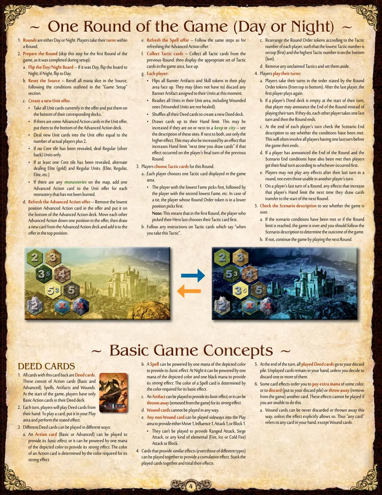
- 每轮要么是白天，要么是夜晚。玩家在一轮内进行他们的回合。
- 准备本轮（游戏的第一轮跳过此步骤，因为已在设置阶段完成）：
a. 翻转白天/夜晚板——如果是白天，将板块翻到夜晚；如果是夜晚，将板块翻到白天。
b. 重置源点——根据"游戏设置"部分概述的条件，重新掷源点中的所有法术骰。
c. 创建新的单位招募。
• 将当前招募中的所有单位卡牌放到它们对应牌库的底部。
• 如果招募中有一些高级行动卡牌，将它们放到高级行动牌库的底部。
• 发放新的单位卡牌到单位招募中，数量等于实际玩家数加2。
• 如果尚未揭示核心板块，只发放常规单位（银背）。
• 如果至少揭示了一个核心板块，交替发放精英单位（金背）和常规单位。（精英、常规、精英，以此类推）
• 如果地图上有任何修道院，为每个未被烧毁的修道院添加一张高级行动卡牌到单位招募中。
d. 刷新高级行动招募——移除招募中位置最低的高级行动卡牌，并将其放到高级行动牌库的底部。将其他每张高级行动卡牌在招募中的位置下移一位，然后从高级行动牌库抽一张新卡牌，并将其添加到招募的顶部位置。
e. 刷新法术招募——遵循与刷新高级行动招募相同的步骤。
f. 收集战术卡牌——收集上一轮的所有战术卡牌，然后在游戏区域中展示适当的战术卡牌组，正面朝上。
g. 每位玩家：
• 将他们游戏区域中的所有旗帜神器和技术指示物翻转为正面朝上。他们可以（但不必须）在此刻弃置分配给他们单位的任何旗帜神器。
• 准备他们单位区域中的所有单位，包括受伤单位（受伤单位不会治愈）。
• 将他们的所有功业卡牌洗牌，形成新的功业牌库。
• 摸牌直到达到他们的手牌上限。如果他们位于城堡或城市上或旁边，手牌上限可能会增加——参见这些地点的描述。如果同时位于两者旁边，仅使用较高的效果。如果"下次你摸牌时"增加手牌上限的效果在玩家上一轮的最终回合发生，手牌上限也可能增加。
- 玩家为本轮选择战术卡牌。
a. 每位玩家选择一张游戏区域中展示的战术卡牌。
• 声望最低的玩家先选，然后是声望第二低的玩家，以此类推。如果平局，回合顺序指示物位置较低的玩家先选。
注意：这意味着在第一轮，
4. 玩家进行他们的回合：
a. 玩家按照回合顺序标记（从上到下） stated 的顺序进行回合。在最后一个玩家之后，第一个玩家再次进行。
b. 如果玩家在自己的回合开始时，他们的功业牌库为空，该玩家可以宣布回合结束，而不是进行他们的回合。如果他们这样做，其他每个玩家进行最后一次回合，然后回合结束。
c. 在每个玩家回合结束时，检查场景结束描述，看条件是否已满足。这通常涉及所有玩家在游戏结束前进行最后一次回合。
d. 如果玩家已宣布回合结束，且场景结束条件也已满足，则玩家根据 whichever occurred first 进行他们的最终回合。
e. 玩家不能在他们在某回合的最后一次回合后 play 任何效果， even those usable in another player's turn。
f. 在玩家在某回合的最后一次回合时，任何 increase 该玩家手牌限制的效果在下次他们摸牌时 transfer to the start of the next Round。
5. 检查场景描述，看游戏是否结束。
a. 如果场景条件已满足或达到回合限制，游戏结束，你应该按照场景描述确定游戏结果。
b. 如果没有，通过进行下一轮继续游戏。
功业卡牌
- 所有带有这种牌背的卡牌都是功业卡牌。
这些包括行动卡牌（基础和高级）、法术、神器 and 伤口。
在游戏开始时，玩家在他们的功业牌库中只有基础行动卡牌。
2. 每回合，玩家将从他们的手牌中打出功业卡牌。要打出一张卡牌，将其放入你的打出区域并执行 stated 效果。
- 不同的功业卡牌可以以不同方式打出：
a. 行动卡牌（基础或高级）可以被打出以提供其基础效果，或者它可以被 depicted color 的一种法力充能以提供其强力效果。行动卡牌的颜色由其强力效果所需的颜色决定。
b. 法术可以被 depicted color 的一种法力充能以提供其基础效果。在夜晚时，它可以被 depicted color 的一种法力和一种黑色法力充能以提供其强力效果。法术卡牌的颜色由其基础效果所需的颜色决定。
c. 一张神器牌可以被施放以提供其基础效果，或者可以被丢弃（从游戏中移除）以获得其强力效果。
d. 伤牌无法以任何方式被施放。
e. 任何非伤牌都可以横向放入游戏区域，提供移动1、影响力1、攻击1或阻挡1中的任意一种。
• 它们不能被施放以提供远程攻击、围攻攻击或任何类型的元素（火、冰或冷火）攻击或阻挡。
- 提供相似效果的牌（即使是不同类型的）可以一起施放以提供累积效果。将这些施放的牌叠放在一起，并总计它们的效果。
- 在回合结束时，所有已施放的功绩牌都会进入你的弃牌堆。未施放的牌会保留在你的手牌中，除非你决定丢弃一张或多张。
- 一些牌的效果会要求你支付额外颜色的法力，或者丢弃（放入你的弃牌堆）或丢弃（从游戏中移除）另一张牌。如果你无法执行这些操作，则这些效果无法被施放。
a. 伤牌绝不能以这种方式被丢弃或丢弃，除非效果明确允许这样做。因此，"任意牌"指的是你手牌中的任意牌，不包括伤牌。
~
i
基本游戏概念
基本游戏概念
基本游戏概念 ~
~
y
g
y
g
y
g
游戏的一轮（白天或夜晚）
游戏的一轮（白天或夜晚）
游戏的一轮（白天或夜晚） ~
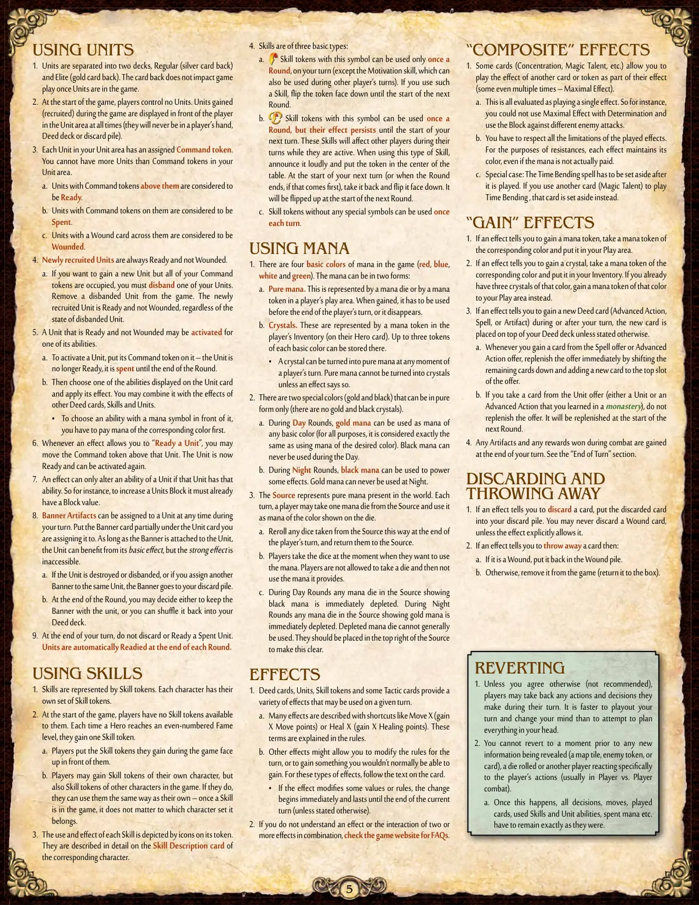
使用单位
- 单位被分为两个牌库：常规单位（银色牌背）和精英单位（金色牌背）。一旦单位进入游戏，牌背不会影响游戏进行。
- 游戏开始时，玩家不控制任何单位。在游戏中获得（招募）的单位始终显示在玩家面前的单位区域中（它们永远不会在玩家的手牌、契约牌库或弃牌堆中）。
- 你单位区域中的每个单位都有一个分配的指挥指示物。你的单位区域中的单位数量不能超过指挥指示物数量。
a. 指挥指示物位于单位上方的单位被视为就绪状态。
b. 指挥指示物位于单位身上的单位被视为已使用状态。
c. 伤牌横跨在单位上的单位被视为受伤状态。
- 新招募的单位总是就绪状态且未受伤。
a. 如果你想获得一个新单位，但你的所有指挥指示物都被占用，你必须解散一个你的单位。将解散的单位移出游戏。新招募的单位是就绪状态且未受伤，无论解散单位的状态如何。
5. 就绪状态且未受伤的单位可以激活其一项能力。
a. 要激活单位，将其指挥指示物放在它身上——单位不再是就绪状态，它在回合结束前已使用。
b. 然后选择单位牌上显示的一项能力并应用其效果。你可以将其与契约牌、技能和单位的其他效果结合使用。
• 要选择前面有法力符号的能力，你必须先支付相应颜色的法力。
- 当效果允许你"使单位就绪"时，你可以将该单位的指挥指示物移到其上方。该单位现在就绪，可以再次激活。
- 效果只能改变单位已有的能力。例如，要增加单位的防御值，它必须已经有一个防御值。
8. 旗帜神器可以在你的回合中的任何时间分配给一个单位。将旗帜牌部分放在你要分配给它的单位牌下方。只要旗帜附加在该单位上，单位就可以受益于其基本效果，但强力效果无法使用。
a. 如果单位被摧毁或解散，或者你将另一面旗帜分配给同一单位，则该旗帜进入你的弃牌堆。
b. 在回合结束时，你可以决定保留旗帜与单位在一起，或者将其洗回你的契约牌库。
- 在你的回合结束时，不要弃置或使已使用的单位就绪。单位在每个回合结束时自动就绪。
使用技能
- 技能由技能指示物表示。每个角色都有自己的技能指示物集合。
- 游戏开始时，玩家没有可用的技能指示物。
给他们。每当一名英雄达到偶数级的声望时，他们会获得一个技能指示物。
a. 玩家将他们在游戏过程中获得的技能指示物正面朝上放在自己面前。
b. 玩家可以获得自己角色的技能指示物，也可以获得游戏中其他角色的技能指示物。如果他们这样做，他们可以像使用自己的技能指示物一样使用它们——一旦技能进入游戏，它属于哪个角色集并不重要。
- 每个技能的使用和效果都通过其指示物上的图标来描绘。它们在相应角色的技能描述卡上有详细说明。
4. 技能有三种基本类型：
a. 带有此符号的技能指示物每轮只能使用一次，在你的回合使用（动机技能除外，它也可以在其他玩家的回合使用）。如果你使用这样的技能，将指示物翻面直到下一轮开始。
b.
带有此符号的技能指示物每轮可以使用一次，但它们的效果会持续到你的下一个回合开始。这些技能在它们活跃期间会在其他玩家的回合影响其他玩家。使用此类技能时，大声宣布并将指示物放在桌子中央。在你的下一个回合开始时（或者如果轮次先结束，则在轮次结束时），将其取回并翻面。它将在下一轮开始时翻回正面。
c. 没有任何特殊符号的技能指示物每回合可以使用一次。
使用法力
- 游戏中有四种基本颜色的法力（红色、蓝色、白色和绿色）。法力可以有两种形式：
a. 纯净法力。这由一个法力骰子或玩家游戏区域中的一个法力指示物表示。获得时，必须在玩家回合结束前使用，否则它会消失。
b. 水晶。这些由玩家库存（在其英雄卡上）中的法力指示物表示。每种基本颜色最多可以存储三个指示物。
• 水晶可以在玩家回合的任何时候转化为纯净法力。除非有特殊效果说明，否则纯净法力不能转化为水晶。
- 有两种特殊颜色（金色和黑色）只能以纯净形式存在（没有金色和黑色水晶）。
a. 在白昼轮次，金色法力可以用作任何基本颜色的法力（就所有目的而言，它被认为与使用所需颜色的法力完全相同）。黑色法力在白昼永远不能使用。
b. 在黑夜轮次，黑色法力可用于驱动某些效果。金色法力在黑夜永远不能使用。
- 源代表世界上存在的纯净法力。每个回合，玩家可以从源中取一个法力骰子，并将其用作骰子上所示颜色的法力。
a. 以这种方式从源中取出的任何骰子在玩家回合结束时重新投掷，并将其返回源中。
b. 玩家想要使用法力时，可以拿取骰子。玩家不允许拿取骰子后不使用其提供的法力。
c. 在白昼轮中，源中显示黑色法力的任何骰子会立即耗尽。在黑夜轮中，源中显示金色法力的任何骰子会立即耗尽。耗尽的法力骰子通常不能使用。应将其放置在源的右上角以明确表示这一点。
效果
- 契约卡牌、单位、技能指示物和一些战术卡牌提供可在特定回合使用的一系列效果。
a. 许多效果使用简写描述，如移动X（获得X移动点）或治疗X（获得X治疗点）。这些术语在规则中有解释。
b. 其他效果可能允许你修改回合的规则，或获得你通常无法获得的东西。对于这类效果，请遵循卡牌上的文本。
• 如果效果修改某些数值或规则，变更立即生效并持续到当前回合结束（除非另有说明）。
- 如果你不理解某个效果或两个或多个效果组合时的互动，请查看游戏网站的常见问题解答。
"组合"效果
- 某些卡牌（专注、魔法天赋等）允许你将另一张卡牌或指示物的效果作为其效果的一部分来使用（有些甚至可以多次使用——最大效果）。
a. 这都被视为使用单个效果。因此，例如，你不能将最大效果与决心结合使用，并对不同的敌方攻击使用格挡。
b. 你必须遵守所使用效果的所有限制。对于抗性目的，每个效果保持其颜色，即使实际上没有支付法力。
c. 特殊情况：时间扭曲法术在使用后必须被搁置。如果你使用另一张卡牌（魔法天赋）来使用时间扭曲，则那张卡牌被搁置。
"获得"效果
- 如果效果告诉你获得一个法力指示物，请拿取相应颜色的法力指示物并将其放入你的游戏区域。
- 如果效果告诉你获得一个水晶，请拿取相应颜色的法力指示物并将其放入你的背包。如果你已经有三个该颜色的水晶，则改为将该颜色的法力指示物获得到你的游戏区域。
- 如果效果告诉你在你的回合期间或之后获得一张新的契约卡牌（高级行动、法术或神器），除非另有说明，否则新卡牌被放置在你的契约牌库顶部。
a. 每当你从法术提供或高级行动提供中获得一张卡牌时，立即通过将剩余卡牌下移并向提供顶部槽位添加一张新卡牌来补充提供。
b. 如果你从单位提供中获得卡牌（无论是单位还是
弃置和丢弃
- 如果某个效果要求你弃置一张卡牌，将弃置的卡牌放入你的弃牌堆。你永远不能弃置伤害卡，除非该效果明确允许这样做。
- 如果某个效果要求你丢弃一张卡牌，则：
a. 如果是伤害卡，将其放回伤害牌堆。
b. 否则，将其从游戏中移除（放回盒中）。
撤销
- 除非你们另有约定（不推荐），否则玩家可以撤销他们在自己回合期间做出的任何行动和决定。先执行你的回合再改变主意，比试图在脑中规划一切要更快。
2. 你不能撤销到任何新信息被揭示（一张地图板块、敌方指示物或卡牌）、骰子被投掷或另一名玩家针对该玩家的行动做出特定反应（通常在玩家对战玩家战斗中）之前的时刻。
a. 一旦这种情况发生，所有决定、移动、打出的卡牌、使用的技能和单位能力、消耗的法力等都必须保持原样。
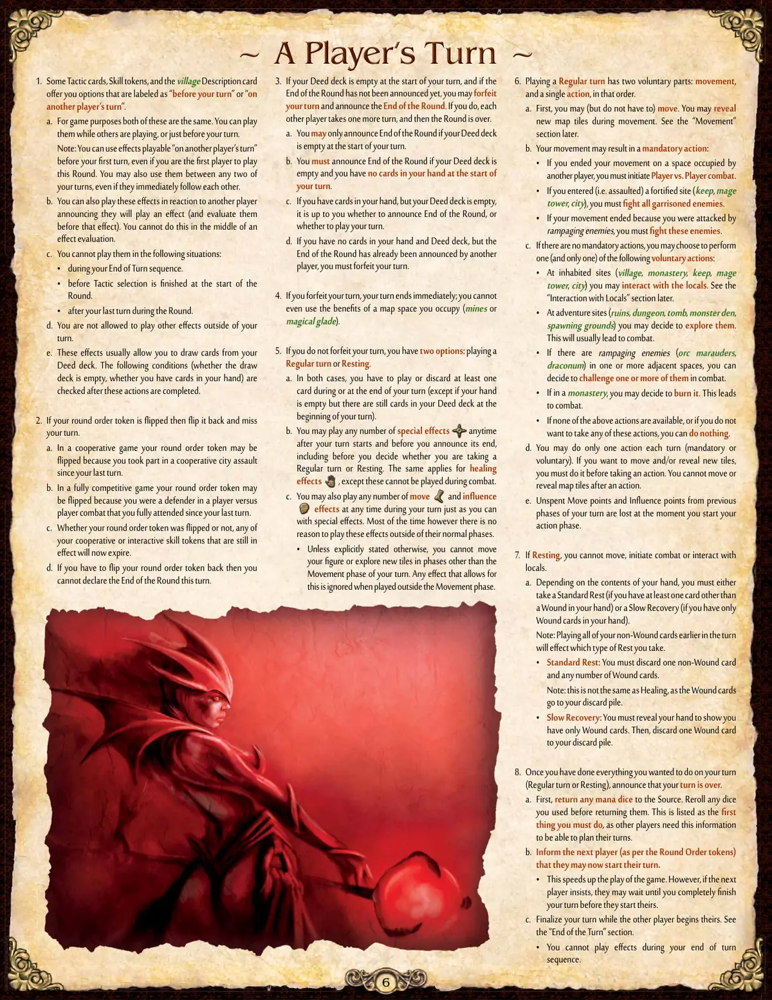
~
y
玩家的回合
玩家的回合
玩家的回合 ~
- 一些战术卡、技能指示物和村庄描述卡提供了标记为"在你的回合前"或"在另一名玩家的回合"的选项。
a. 为了游戏目的，这两种情况是相同的。你可以在其他玩家进行游戏时使用它们，或者就在你的回合前使用。
注意：你可以在你的第一回合前使用可在"另一名玩家的回合"使用的效果，即使你是这一轮第一个开始游戏的玩家。你也可以在你的任意两个回合之间使用它们，即使它们是紧接着的。
b. 你也可以在另一名玩家宣布他们将使用效果时作为反应来使用这些效果（并在该效果评估前评估它们）。你不能在效果评估的中间这样做。
c. 你不能在以下情况下使用它们：
• 在你的回合结束时序列期间。
• 在轮次开始时战术选择完成前。
• 在轮次中你的最后一个回合后。
d. 你不允许在你的回合外使用其他效果。
e. 这些效果通常允许你从你的功业牌库中摸牌。以下条件（牌库是否为空、你手中是否有牌）在这些行动完成后检查。
- 如果你的轮次顺序指示物被翻转了，则将其翻回并跳过你的回合。
a. 在合作游戏中，你的轮次顺序指示物可能被翻转，因为自从你上一次回合后你参与了合作城市袭击。
b. 在完全竞争游戏中，你的轮次顺序指示物可能被翻转，因为自从你上一次回合后你完全参加了玩家对战并作为防守方。
c. 无论你的轮次顺序指示物是否被翻转，任何仍然有效的合作或互动技能指示物现在都将过期。
d. 如果你必须将你的轮次顺序指示物翻回，那么你这一回合不能宣布轮次结束。
- 如果在你的回合开始时你的功业牌库为空，并且轮次结束尚未被宣布，你可以放弃你的回合并宣布轮次结束。如果你这样做，其他每位玩家再进行一个回合，然后轮次结束。
a. 只有在你的回合开始时你的功业牌库为空时，你才能宣布轮次结束。
b. 如果在你的回合开始时你的功业牌库为空且你手中没有牌，你必须宣布轮次结束。
c. 如果你手中牌，但你的功业牌库为空，你可以选择是否宣布轮次结束，或者是否进行你的回合。
d. 如果你手中没有牌且功业牌库为空，但轮次结束已被另一名玩家宣布，你必须放弃你的回合。
- 如果你放弃你的回合，你的回合立即结束；你甚至不能使用你所占据的地图空间（矿场或魔法林间空地）的收益。
- 如果你不放弃你的回合，你有两个选项：进行常规回合或休息。
a. 在这两种情况下，你都必须在你的回合期间或结束时打出或弃置至少一张牌（除非在你的回合开始时你的手牌为空，但 deed 牌库中仍有牌）。
b. 你可以在你的回合开始后、宣布结束前的任何时间使用任意数量的特殊效果，包括在你决定是进行常规回合还是休息之前。治疗效果也是如此，但这些效果不能在战斗中使用。
c. 你也可以在你的回合期间的任何时间使用任意数量的移动和影响力效果，就像使用特殊效果一样。然而，大多数情况下，在正常阶段之外使用这些效果没有理由。
• 除非另有明确说明，否则你不能在你的回合的移动阶段之外的阶段移动你的棋子或探索新的板块。任何允许这样做的效果如果在移动阶段之外使用，将被忽略。
6. 进行常规回合有两个自愿部分：移动，然后是一个单一行动，按此顺序进行。
a. 首先，你可以（但不必）移动。你可以在移动过程中揭示新的地图板块。请参阅后面的"移动"部分。
b. 你的移动可能导致强制行动：
• 如果你的移动结束在另一个玩家占据的区域上，你必须发起玩家对战玩家战斗。
• 如果你进入（即攻击）了要塞（城堡、法师塔、城市），你必须与驻守的敌人战斗。
• 如果你的移动结束是因为你受到了狂暴敌人的攻击，你必须与这些敌人战斗。
c. 如果没有强制行动，你可以选择执行以下自愿行动之一：
• 在有人居住的地点（村庄、修道院、城堡、法师塔、城市），你可以与当地人互动。请参阅后面的"与当地人互动"部分。
• 在冒险地点（废墟、地牢、坟墓、怪物巢穴、繁殖地），你可以决定探索它们。这通常会导致战斗。
• 如果一个或多个相邻区域有狂暴敌人（兽人掠夺者、龙兽），你可以决定挑战其中的一个或多个敌人进行战斗。
• 如果在修道院中，你可以决定烧毁它。这会导致战斗。
• 如果以上行动都不可用，或者你不想执行这些行动中的任何一个，你可以什么都不做。
d. 每个回合你只能执行一个行动（强制或自愿）。如果你想移动和/或揭示新板块，你必须在进行行动之前完成。你不能在行动后移动或揭示地图板块。
e. 在你开始行动阶段时，前一阶段未使用的移动点和影响力点将丢失。
7. 如果选择休息，你不能移动、发起战斗或与当地人互动。
a. 根据你手牌的内容，你必须进行标准休息（如果你手中有至少一张非创伤牌）或缓慢恢复（如果你手中只有创伤牌）。
注意：在回合早期打出所有非创伤牌将决定你进行哪种类型的休息。
• 标准休息：你必须弃掉一张非创伤牌和任意数量的创伤牌。
注意：这与治疗不同，因为创伤牌会进入你的弃牌堆。
• 缓慢恢复：你必须展示你的手牌以证明你只有创伤牌。然后，将一张创伤牌弃到你的弃牌堆。
8. 当你在你的回合（常规回合或休息）上完成了所有想做的事情后，宣布你的回合结束。
a. 首先，将任何魔力骰子归还到源点。在归还之前重新投掷你使用过的任何骰子。这被列为你必须做的第一件事，因为其他玩家需要这些信息来规划他们的回合。
b. 告知下一位玩家（根据轮次顺序指示物）他们现在可以开始他们的回合。
• 这加快了游戏进程。然而，如果下一位玩家坚持，他们可以等到你完全完成你的回合后再开始他们的回合。
c. 当其他玩家开始他们的回合时，完成你的回合。参见"回合结束"部分。
• 你不能在你的回合结束阶段打出效果。
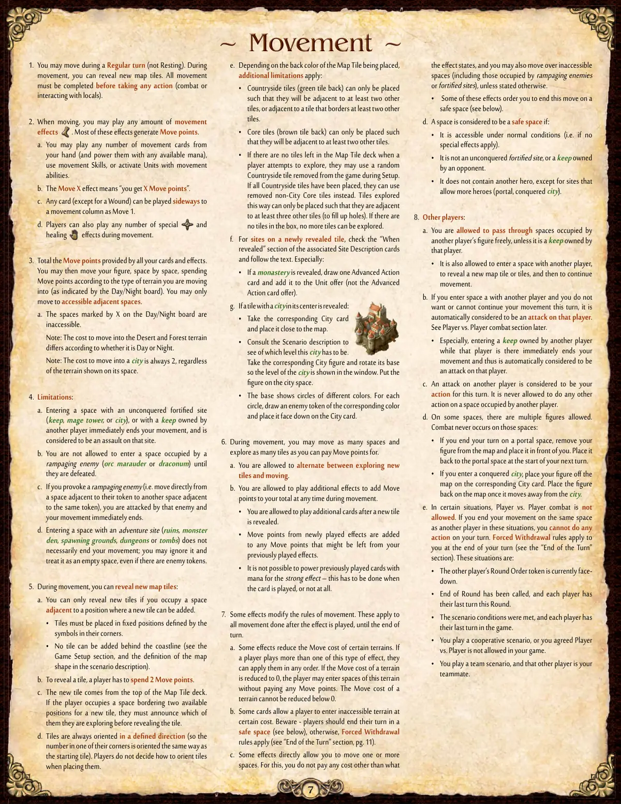
~ 移动
移动
移动 ~
- 你可以在常规回合（非休息回合）期间移动。在移动过程中，你可以揭示新的地图板块。所有移动必须在采取任何行动（战斗或与当地人互动）之前完成。
2. 移动时，你可以使用任意数量的移动效果。这些大多数效果会产生移动点数。
a. 你可以使用手牌中的任意数量的移动牌（并用任何可用法力为其充能），使用移动技能，或激活具有移动能力的单位。
b. "移动X"效果表示"你获得X个移动点数"。
c. 任何牌（除了创伤牌）都可以横向放置到移动栏中，作为移动1。
d. 玩家也可以在移动期间使用任意数量的特殊和治疗效果。
- 计算你的所有牌和效果提供的移动点数总数。然后你可以移动你的棋子，一格一格地移动，根据你进入的地形类型花费移动点数（如昼夜版所示）。你只能移动到可到达的相邻区域。
a. 昼夜版上标记为X的区域是不可到达的。
注意：进入沙漠和森林地形的成本根据是白天还是夜晚而有所不同。
注意：进入城市的成本始终是2，无论其区域显示的是什么地形。
4. 限制：
a. 进入一个有未被征服的防御工事的区域（城堡、法师塔或城市），或进入一个被其他玩家拥有的城堡，会立即结束你的移动，并被视为对该区域的攻击。
b. 在击败游荡的敌人（兽人掠夺者或德拉库姆）之前，你不允许进入被其占据的区域。
c. 如果你激怒了游荡的敌人（即直接从与其指示物相邻的区域移动到与同一指示物相邻的另一个区域），你会受到该敌人的攻击，你的移动立即结束。
d. 进入有冒险地点的区域（废墟、怪物巢穴、繁殖地、地牢或陵墓）不一定结束你的移动；你可以忽略它并将其视为空区域，即使那里有敌方指示物。
5. 在移动期间，你可以揭示新的地图板块：
a. 只有当你占据一个可以添加新板块的位置的相邻区域时，你才能揭示新板块。
• 板块必须放置在其角落符号定义的固定位置。
• 不能在海岸线后面添加任何板块（参见游戏设置部分，以及场景描述中的地图形状定义）。
b. 玩家需要花费2个移动点数来揭示一个板块。
c. 新板块来自地图牌库的顶部。如果玩家占据的区域与两个可添加新板块的位置相邻，他们必须在揭示板块前宣布他们正在探索哪一个。
d. 板块总是按特定方向放置（因此板块角落中的数字方向与起始板块相同）。玩家在放置板块时不决定其方向。
e. 根据所放置地图板块的背面颜色，适用以下额外限制：
• 乡村板块（绿色板块背面）只能放置为至少与另外两个板块相邻，或与至少与另外两个板块相邻的板块相邻。
• 核心板块（棕色板块背面）只能放置为至少与另外两个板块相邻。
• 如果玩家尝试探索时牌库中没有地图板块了，他们可以使用设置阶段从游戏中移除的随机乡村板块。如果所有乡村板块都已放置，他们可以使用被移除的非城市核心板块代替。以此方式探索的板块只能放置为至少与另外三个板块相邻（以填补空隙）。如果盒子中没有板块了，就不能再探索板块。
f. 对于新揭示板块上的地点，查看相关地点描述卡片的"当揭示时"部分并遵循文本。特别是：
• 如果修道院被揭示，抽取一张高级行动卡并将其加入单位提供区（不是高级行动卡提供区）。
g. 如果带有城市中心的板块被揭示：
• 取出对应的城市卡并将其放在地图附近。
• 查阅场景描述，确定这个城市需要是哪个等级。取出对应的城市棋子，旋转其底座，使城市等级显示在窗口中。将棋子放在城市格上。
• 底座显示不同颜色的圆圈。对于每个圆圈，抽取对应颜色的敌方指示物并将其面朝下放在城市卡上。
6. 在移动过程中，你可以移动尽可能多的格子和探索尽可能多的板块，只要你能够支付移动点数。
a. 你可以在探索新板块和移动之间交替进行。
b. 你可以在移动过程中的任何时候，使用额外效果来增加你的移动点数总数。
• 在新板块揭示后，你可以使用额外卡牌。
• 新使用的效果的移动点数会添加到之前使用效果可能剩余的任何移动点数上。
• 不可能为之前使用的卡牌的强力效果注入法力——这必须在卡牌使用时完成，或者完全不使用。
- 一些效果会修改移动规则。这些效果适用于效果使用后进行的所有移动，直到回合结束。
a. 一些效果会降低特定地形的移动成本。如果玩家使用多个此类效果，可以按任何顺序应用它们。如果地形的移动成本
降至0，玩家可以进入此地形的空间而无需支付任何移动点。地形的移动成本不能降至0以下。
b. 某些卡牌允许玩家在特定成本下进入不可及地形。注意 - 玩家应在安全空间结束他们的回合（见下文），否则，强制撤退规则适用（见"回合结束"部分，第11页）。
c. 某些效果直接允许你移动一个或多个空间。为此，你除了效果所述外不支付任何成本，并且你也可以越过不可及空间（包括那些被暴走的敌人或防御工事占据的空间），除非另有说明。
• 这些效果中的一些要求你将此移动结束于一个安全空间（见下文）。
d. 如果满足以下条件，一个空间被认为是安全空间：
• 在正常条件下可进入（即如果没有特殊效果适用）。
• 它不是未被征服的防御工事，或由对手拥有的城堡。
• 它不包含另一个英雄，但允许更多英雄的地点（传送门、被征服的城市）除外。
8. 其他玩家：
a. 你可以自由地穿过被另一玩家棋子占据的空间，除非那是该玩家拥有的城堡。
• 与另一玩家一起进入一个空间，揭示新的地图板块或板块，然后继续移动也是允许的。
b. 如果你与另一玩家一起进入空间a，而你不想或无法在本回合继续移动，这自动被视为对该玩家的攻击。请参阅后面的玩家对战部分。
• 特别是，当另一玩家在场时进入其拥有的城堡会立即结束你的移动，因此自动被视为对该玩家的攻击。
c. 对另一玩家的攻击被视为你本回合的行动。在被另一玩家占据的空间上执行任何其他行动都是不允许的。
d. 在某些空间上，允许多个棋子存在。这些空间上永远不会发生战斗：
• 如果你在回合结束时位于传送门空间，将你的棋子从版图上移除，并将其放在你面前。在你的下一个回合开始时，将其放回传送门空间。
• 如果你进入被征服的城市，将你的棋子从版图上移除，放在相应的城市卡牌上。一旦棋子离开城市，将其放回版图。
e. 在某些情况下，不允许玩家对战。如果你在这些情况下将移动结束于与另一玩家相同的空间，你无法在你的回合执行任何行动。强制撤退规则适用于你回合结束时（见"回合结束"部分）。这些情况是：
• 另一玩家的回合顺序指示牌当前是面朝下的。
• 已宣告回合结束，并且每个玩家都
• 本轮的最后一个回合。
• 满足了场景条件，每位玩家在游戏中都有他们的最后一个回合。
• 你玩的是合作场景，或者你们同意在游戏中不允许玩家对战。
• 你玩的是团队场景，而那位玩家是你的队友。
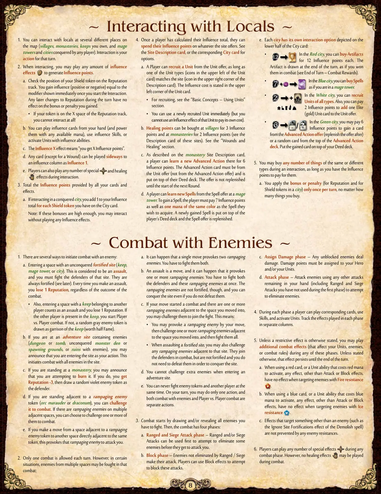
1. 有几种方式可以与敌人发起战斗：
a. 进入一个未被征服的要塞所在的空间（城堡、法师塔或城市）。这被视为一次突击，你必须与该要塞的防御者战斗。他们总是处于防御状态（见后文）。每次进行突击，无论战斗结果如何，你都会失去1点声望。
• 此外，进入属于另一个玩家的城堡空间也视为一次突击，你会失去1点声望。如果该玩家在城堡内，你将开始玩家对战玩家战斗。如果不在，则抽取一个随机的灰色敌人指示物作为城堡驻军（价值为半点声望）。
b. 如果你在一个包含敌人的冒险地点（地牢或陵墓，未被征服的怪物巢穴或繁殖地，或有敌人的废墟），你可以宣布作为你的行动进入该地点。这将与该地点的所有敌人发起战斗。
c. 如果你站在一座修道院旁，你可以宣布尝试烧毁它。如果你这样做，你将获得-3点声望，然后抽取一个随机的紫色敌人指示物作为防御者。
d. 如果你站在一个暴走的敌人指示物旁（兽人掠夺者或龙兽），你可以向其发起挑战。如果多个相邻空间有暴走的敌人，你可以选择向其中一个或多个发起挑战。
e. 如果你从一个与暴走敌人相邻的空间移动到另一个直接相邻于同一指示物的空间，这将引发该暴走敌人攻击你。
- 每回合只允许进行一次战斗。然而，在某些情况下，多个空间的敌人可以在同一次战斗中被击败：
a. 可能发生一次移动引发两个暴走敌人的情况。你必须同时与他们战斗。
b. 突击是一种移动，可能引发一个或多个暴走敌人。你必须同时与防御者和这些暴走敌人战斗。不过，暴走敌人没有防御状态，即使你没有击败他们，也可以征服该地点。
c. 如果你的移动开始了战斗，而你移动到的空间周围有一个或多个暴走敌人，你可以挑战他们加入战斗。这意味着：
• 你可以通过移动引发暴走敌人，然后挑战移动到的空间周围的一个或多个暴走敌人，然后与他们所有人战斗。
• 在突击要塞时，你也可以挑战该要塞周围的任何暴走敌人。他们加入防御者的战斗，但没有防御状态，你不需要击败他们就能征服该地点。
d. 进入冒险地点时，你不能挑战额外的敌人。
e. 你永远不能同时与敌人指示物和另一个玩家战斗。
同一时间。在你的回合，你只能执行一个行动，并且与敌人的战斗和玩家对战是分开的行动。
3. 战斗开始时，抽取并/或揭示所有你必须战斗的敌人。然后，战斗分为四个阶段：
a. 远程和围攻攻击阶段 - 可以首先使用远程和/或围攻攻击，试图在敌人攻击你之前消灭一些敌人。
b. 格挡阶段 - 未被远程/围攻攻击消灭的敌人会发动攻击。玩家可以使用格挡效果试图阻挡这些攻击。
c. 分配伤害阶段 - 任何未被格挡的敌人会造成伤害。伤害点必须分配给你的英雄和/或你的单位。
d. 攻击阶段 - 使用你手中剩余的任何其他攻击（包括你在第一阶段未使用的远程和围攻攻击）攻击敌人，试图消灭敌人。
4. 在每个阶段，玩家可以打出相应的卡牌，使用技能，并激活单位。在单独的列中跟踪每个阶段打出的效果。
- 除非有限制效果另有说明，你可以在这些阶段的任何一个阶段打出额外的战斗效果（影响你的单位、敌人或战斗规则）。除非另有说明，该效果会持续到回合结束。
a. 当使用红色卡牌，或激活需要红色法力才能激活的单位能力时，任何除了攻击或格挡效果之外的效果，在针对有火焰抗性的敌人时无效。
b. 当使用蓝色卡牌，或激活需要蓝色法力才能激活的单位能力时，任何除了攻击或格挡效果之外的效果，在针对有冰霜抗性的敌人时无效。
c. 针对非敌人的效果（如摧毁法术的忽略要塞防御效果）不受任何敌人抗性的影响。
- 玩家可以在任何战斗阶段打出任意数量的特殊效果。然而，战斗期间不能打出任何治疗效果。
- 你可以在地图上的几个不同地方与当地人互动（村庄、修道院、你拥有的城堡、以及任何玩家征服的法师塔和城市）。互动是你该回合的行动。
- 当互动时，你可以打出任意数量的影响力效果来产生影响力点。
a. 检查你的盾牌指示物在声望轨道上的位置。一旦你开始互动，你立即获得等于所示修正值的影响力（正或负）。回合期间声望的任何后续变化都不会影响你获得的奖励或惩罚。
• 如果你的指示物在声望轨道的X格上，你完全不能互动！
b. 你可以从手牌中打出影响力卡牌（并用任何可用的法力为其充能），使用影响力技能，或
激活具有影响力能力的单位。
c. "影响力X"效果意为"你获得X点影响力"。
d. 任何卡牌（除了创伤牌）都可以横向放置到影响力栏中，作为影响力1。
e. 玩家也可以在互动期间打出任意数量的特殊和治疗效果。
- 计算你所有卡牌和效果提供的影响力点数总和。
a. 如果在被征服的城市中进行互动，你为城市卡上的每个盾牌指示物增加1点影响力总数。
注意：如果这些奖励足够高，你可以在不打出任何影响力效果的情况下进行互动。
- 一旦玩家计算了他们的影响力总数，他们可以将影响力点花费在地点提供的选项上。参见地点描述卡牌或相应的城市卡牌了解选项。
a. 玩家可以从单位招募区招募一个单位，只要单位类型（单位卡左上角的图标）与地点（描述卡右上角的图标）匹配。影响力成本显示在单位卡左上角。
• 关于招募，请参见"基本概念——使用单位"部分。
• 你可以立即使用新招募的单位（但你不能使用该单位的影响力效果来支付其自身成本）。
b. 在村庄可以花费3点影响力购买治疗点，在修道院可以花费2点影响力购买治疗点（参见这些地点的描述卡）。参见"创伤和治疗"部分。
c. 如修道院地点描述卡所述，玩家可以在那里花费6点影响力学习一个新的高级行动。高级行动卡必须来自单位招募区（而非高级行动招募区），并放置在其功业牌库顶。招募区直到下一轮开始才会补充。
d. 玩家可以在法师塔的法术招募区学习新法术。要获得一个法术，玩家必须支付7点影响力以及一个与其想要获得的法术颜色相同的法力。新获得的法术被放置在玩家的功业牌库顶，法术招募区会得到补充。
e. 每个城市都有其自身的互动选项，显示在城市卡下半部分：
• 在红色城市，你可以花费12点影响力购买神器。神器在回合结束时抽取，如同你在战斗中获胜获得它们一样（参见回合结束——战斗奖励）。
• 在蓝色城市，你可以如同在法师塔中一样购买法术。
• 在白色城市，你可以招募所有类型的单位。此外，你可以支付2点影响力将一个精英（金色）单位卡添加到单位招募区。
• 在绿色城市，你可以支付6点影响力从高级行动招募区获得一张卡牌（之后补充招募区）或从高级行动牌库顶随机获得一张卡牌。
牌库。将获得的牌放在你的 deed 牌库顶上。
- 在一次互动中，你可以购买任意数量的相同或不同类型的东西，只要你有关联点数来支付它们。
a. 无论你购买多少东西，每回合只应用一次奖励或惩罚（针对声誉和城市中的盾牌指示物）。
~
g
与当地人互动
与当地人互动
与当地人互动 ~
~
与敌人战斗
与敌人战斗
与敌人战斗 ~
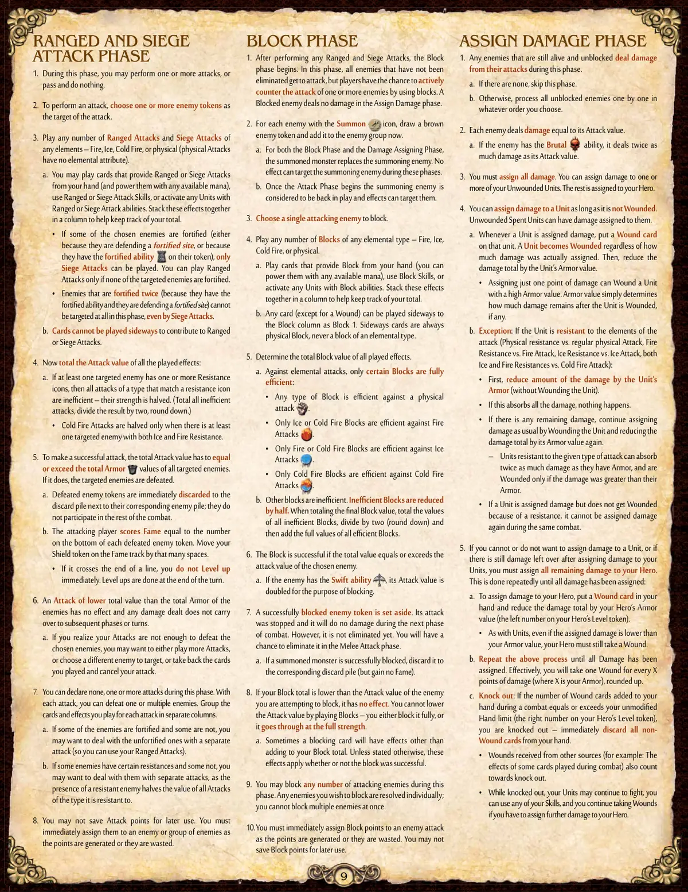
远程攻击和围攻攻击
攻击阶段
1. 在此阶段，你可以执行一次或多次攻击，或者跳过并什么都不做。
2. 要执行攻击，选择一个或多个敌方指示物作为攻击目标。
3. 出任意数量的远程攻击和围攻攻击，可以是任意元素——火焰、冰霜、冷火或物理（物理攻击没有元素属性）。
a. 你可以打出提供远程或围攻攻击的卡牌（并用任何可用法力为其充能），使用远程或围攻攻击技能，或激活任何具有远程或围攻攻击能力的单位。将这些效果堆叠在一起成一列，以帮助你追踪你的总攻击力。
• 如果一些选定的敌人被加固了（要么是因为他们在防守加固的地点，要么是因为他们的指示物上有加固能力），只能打出围攻攻击。只有当所有被瞄准的敌人都没有被加固时，才能打出远程攻击。
• 被加固两次的敌人（因为他们有加固能力并且他们在防守加固的地点）在此阶段完全不能被瞄准，即使是围攻攻击也不行。
b. 卡牌不能横向打出以贡献于远程或围攻攻击。
- 现在计算所有已打出效果的总攻击值：
a. 如果至少一个被瞄准的敌人有一个或多个抗性图标，那么与抗性图标相匹配类型的攻击都是低效的——它们的力量减半。（将所有低效攻击的总和相加，将结果除以二，向下取整。）
• 只有当至少一个被瞄准的敌人同时具有冰霜和火焰抗性时，冷火攻击才会减半。
- 要成功攻击，总攻击值必须等于或超过所有被瞄准敌人的总护甲值。
如果达到，被瞄准的敌人就被击败了。
a. 被击败的敌方指示物立即被弃置到其对应的敌方牌堆旁边的弃牌堆；它们不参与战斗的其余部分。
b. 攻击玩家获得等于每个被击败敌方指示物底部数字的声望。在声望轨道上移动你的盾牌指示物相应的格数。
• 如果它跨越了一条线的末端，你不会立即升级。升级在回合结束时进行。
6. 总攻击值低于敌人总护甲值的攻击没有效果，并且任何造成的伤害不会延续到后续阶段或回合。
a. 如果你意识到你的攻击不足以击败选定的敌人，你可能想要打出更多攻击，或者选择不同的敌人作为目标，或者收回你打出的卡牌并取消你的攻击。
- 在此阶段，你可以宣布零次、一次或多次攻击。
每次攻击，你可以击败一个或多个敌人。为每次攻击使用的卡牌和效果分组，放在不同的列中。
a. 如果有些敌人是强化状态，有些不是，你可能想用一次单独的攻击来处理未强化的敌人（这样你就可以使用你的远程攻击）。
b. 如果有些敌人有特定抗性，有些没有，你可能想用单独的攻击来处理他们，因为有抗性的敌人会使它所抗的攻击类型的效果值减半。
- 你不能保存攻击点数以供后续使用。你必须立即将它们分配给一个敌人或一组敌人，否则这些点数将被浪费。
格挡阶段
1. 在执行任何远程攻击和围攻攻击后，格挡阶段开始。在此阶段，所有未被消灭的敌人都会进行攻击，但玩家有机会通过使用格挡来主动反击一个或多个敌人的攻击。被格挡的敌人在分配伤害阶段不会造成伤害。
2. 对于每个带有召唤图标的敌人，抽取一个棕色敌人指示物并将其添加到敌人组中。
a. 在格挡阶段和伤害分配阶段，被召唤的怪物取代了召唤它的敌人。在这两个阶段，没有任何效果可以针对召唤它的敌人。
b. 一旦攻击阶段开始，召唤它的敌人被认为重新回到游戏中，效果可以针对它们。
- 选择一个攻击的敌人进行格挡。
- 任意数量的任意元素类型的格挡——火焰、冰霜、冷火或物理。
a. 从你的手牌中打出提供格挡的卡牌（你可以用任何可用法力为其充能），使用格挡技能，或激活任何具有格挡能力的单位。将这些效果堆叠在同一列中，以帮助你追踪你的总格挡值。
b. 任何卡牌（除了创伤牌）都可以横向放置在格挡列中作为1点格挡。横向放置的卡牌总是物理格挡，永远不会是元素类型的格挡。
- 确定所有已使用效果的总格挡值。
a. 针对元素攻击，只有某些格挡是完全有效的：
• 任何类型的格挡对物理攻击都有效
• 只有冰霜或冷火格挡对火焰攻击有效
• 只有火焰或冷火格挡对冰霜攻击有效
• 只有冷火格挡对冷火攻击有效
b. 其他格挡是无效的。无效格挡的值减半。在计算最终格挡总值时，先将所有无效格挡的值相加，除以二（向下取整），然后再加上所有有效格挡的完整值。
- 如果总格挡值等于或超过所选敌人的攻击值，则格挡成功。
a. 如果敌人具有迅捷能力，其攻击值是
分配伤害阶段
1. 任何仍然存活且未被阻挡的敌人在此阶段会从其攻击中造成伤害。
a. 如果没有，则跳过此阶段。
b. 否则，按您选择的顺序逐一处理所有未被阻挡的敌人。
- 每个敌人造成的伤害等于其攻击值。
a. 如果敌人具有残暴(Brutal)能力，它造成的伤害是其攻击值的两倍。
- 您必须分配所有伤害。您可以将伤害分配给一个或多个您的未受伤单位。其余部分分配给您的英雄。
- 只要单位未受伤，您就可以将伤害分配给它。未受伤的已使用单位可以被分配伤害。
a. 每当单位被分配伤害时，在该单位上放置一张伤害卡。无论实际分配了多少伤害，单位都会受伤。然后，从伤害总量中减去单位的护甲值。
• 即使只分配一点伤害，也可以伤害高护甲值的单位。护甲值仅决定单位受伤后剩余的伤害量（如果有）。
b. 例外：如果单位对攻击元素有抗性（物理抗性对普通物理攻击，火焰抗性对火焰攻击，冰霜抗性对冰霜攻击，冰霜和火焰抗性对冷火攻击）：
• 首先，将伤害量减去单位的护甲值（不伤害单位）。
• 如果这吸收了所有伤害，则无事发生。
• 如果有任何剩余伤害，则继续像往常一样通过伤害单位并再次从伤害总量中减去其护甲值来分配伤害。
– 对特定类型攻击有抗性的单位可以吸收
• 如果单位受到的伤害是其护甲值的两倍，并且伤害大于其护甲值时才会受伤。
• 如果一个单位被分配了伤害但由于抗性而未受伤，则在同一战斗中不能再次被分配伤害。
- 如果你无法或不想将伤害分配给单位，或者在将伤害分配给你的单位后仍有剩余伤害，你必须将所有剩余伤害分配给你的英雄。
这是重复进行直到所有伤害被分配：
a. 要将伤害分配给你的英雄，在你的手牌中放入一张伤害牌，并将伤害总数减去你英雄的护甲值（你英雄等级指示物上的左边的数字）。
• 与单位一样，即使分配的伤害低于你的护甲值，你的英雄也必须承受一张伤害牌。
b. 重复上述过程，直到所有伤害被分配。实际上，你将每X点伤害承受一张伤害牌（其中X是你的护甲值），向上取整。
c. 击倒：如果在一次战斗中添加到你手牌的伤害牌数量等于或超过你未修改的手牌上限（你英雄等级指示物上的右边的数字），你被击倒——立即从你的手牌中弃掉所有非伤害牌。
• 来自其他来源的伤害（例如：战斗期间使用的一些牌的效果）也计入击倒条件。
• 被击倒时，你的单位可以继续战斗，你可以使用任何技能，如果你必须将更多伤害分配给你的英雄，你继续承受伤害。
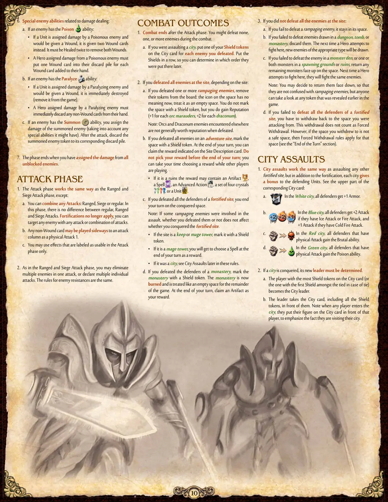
6. 与伤害 dealt 相关的特殊敌人能力：
a. 如果敌人有毒药能力：
• 如果一个单位被有毒的敌人分配了伤害并且将要受到一个创伤，它会被给予两张创伤牌。它必须被治愈两次才能移除这两个创伤。
• 一个英雄被有毒的敌人分配了伤害，必须为每张加入其手牌的创伤牌在其弃牌堆中放入一张创伤牌。
b. 如果敌人有麻痹能力：
• 如果一个单位被麻痹的敌人分配了伤害并且将要受到一个创伤，它会被立即摧毁（将其从游戏中移除）。
• 一个英雄被麻痹的敌人分配了伤害，必须立即从其手牌中弃掉所有非创伤牌。
c. 如果敌人有召唤能力，你分配被召唤敌人的伤害（考虑它可能拥有的任何特殊能力）。攻击后，将被召唤的敌人指示物放入其对应的弃牌堆。
7. 当你已经分配了所有未被阻挡敌人的伤害时，该阶段结束。
攻击阶段
1. 攻击阶段的工作方式与远程攻击阶段和围攻攻击阶段相同，除了：
a. 你可以组合任何攻击：远程、围攻或常规。在此阶段，常规攻击、远程攻击和围攻攻击之间没有区别。防御工事不再适用，你可以用任何攻击或攻击组合瞄准任何敌人。
b. 任何非创伤牌可以横向放置到攻击列中，作为一个物理攻击1。
c. 你可以使用标记为仅在攻击阶段可用的效果。
2. 如同在远程攻击阶段和围攻攻击阶段中，你可以在一次攻击中消灭多个敌人，或宣布多次单独攻击。敌人抗性的规则相同。
战斗结果
- 攻击阶段结束后，战斗结束。在战斗期间，你可能击败零个、一个或多个敌人。
a. 如果你正在攻击一座城市，为你击败的每个敌人在你城市的卡牌上放置一个你的盾牌指示物。将盾牌排成一行，以便你之后可以确定它们被放置的顺序。
- 如果你击败了地点的所有敌人，根据地点：
a. 如果你击败了一个或多个暴走的敌人，从版图上移除它们的指示物：该空间上的图标现在没有意义，将其视为一个空空间。你不要用盾牌指示物标记该空间，但你确实会获得声望（每个兽人掠夺者+1，每个 draconum +2）。
注意：在其他地方遇到的兽人和 draconum 敌人被击败时通常不获得声望。
b. 如果你击败了冒险地点的所有敌人，用盾牌指示物标记该空间。在你的回合结束时，你可以声明地点描述卡上指示的奖励。不要在你的回合结束前选择你的奖励；你
可以在其他玩家进行游戏时，慢慢选择你的奖励。
• 如果是废墟，奖励可能包含一件神器(Artifact)、一个法术(Spell)、一个高级行动(Advanced Action)、一组四个水晶(crystals)或一个单位(Unit)。
c. 如果你击败了防御工事的全部防御者，你的回合结束于被征服的区域。
注意：如果一些狂暴的敌人参与了这次袭击，无论你是否击败了他们，都不会影响你是否征服了该防御工事。
• 如果该地点是城堡或法师塔，用盾牌(Shield)指示物标记它。
• 如果是法师塔，你将在回合结束时选择一个法术(Spell)作为奖励。
• 如果是城市，请参阅规则后面的"城市袭击(City Assaults)"部分。
d. 如果你击败了修道院的防御者，用盾牌(Shield)指示物标记该修道院。该修道院已被烧毁，在游戏的剩余时间里被视为空区域。在你的回合结束时，获得一件神器(Artifact)作为你的奖励。
3. 如果你没有击败该地点的所有敌人：
a. 如果你未能击败狂暴的敌人，它留在其所在区域。
b. 如果你未能击败在地牢、坟墓或修道院中抽到的敌人，将它们弃置。下次有英雄尝试在此战斗时，会抽到相应类型的新敌人。
c. 如果你未能击败怪物巢穴中的敌人，或在繁殖地或废墟中的一个或两个怪物，将剩余的怪物正面朝上放回该区域。下次有英雄尝试在此战斗时，他们将面对相同的敌人。
注意：你可以选择将它们背面朝上放回，以免与狂暴的敌人混淆，但任何人都可以查看在游戏早期被揭示过的任何指示物。
d. 如果你未能击败防御工事的全部防御者，你必须撤退回你攻击前所在的区域。这次撤退不视为强制撤退(Forced Withdrawal)。然而，如果你撤退到的区域不是安全区域，则该区域适用强制撤退规则（参见"回合结束"部分）。
城市袭击(CITY ASSAULTS)
1. 城市袭击与袭击任何其他防御工事的方式相同，但除了防御工事外，每个城市还会给防御单位(Defending Units)提供加成。参见相应城市卡牌的上部：
a.
在白城(White city)中，所有防御者获得+1护甲(Armor)。
b.
在蓝城(Blue city)中，所有具有冰霜攻击(Ice Attack)或火焰攻击(Fire Attack)的防御者获得+2攻击力(Attack)，具有寒冰火焰攻击(Cold Fire Attack)的防御者获得+1攻击力(Attack)。
c.
在红城(Red city)中，所有具有物理攻击(physical Attack)的防御者获得残暴能力(Brutal ability)。
d.
在绿城(Green city)中，所有具有物理攻击(physical Attack)的防御者获得中毒能力(Poison ability)。
- 如果一个城市被征服，必须确定其新的领导者。
a. 在城市卡牌上拥有最多盾牌(Shield)指示物的玩家（或
在平局的情况下，拥有第一个盾牌的玩家成为城市领导者。
b. 领导者拿走他们面前的城市卡牌，包括所有的盾牌指示物。注意，当任何玩家进入城市时，他们会将自己的棋子放在该玩家面前的城市卡牌上，以强调他们正在访问自己的城市。
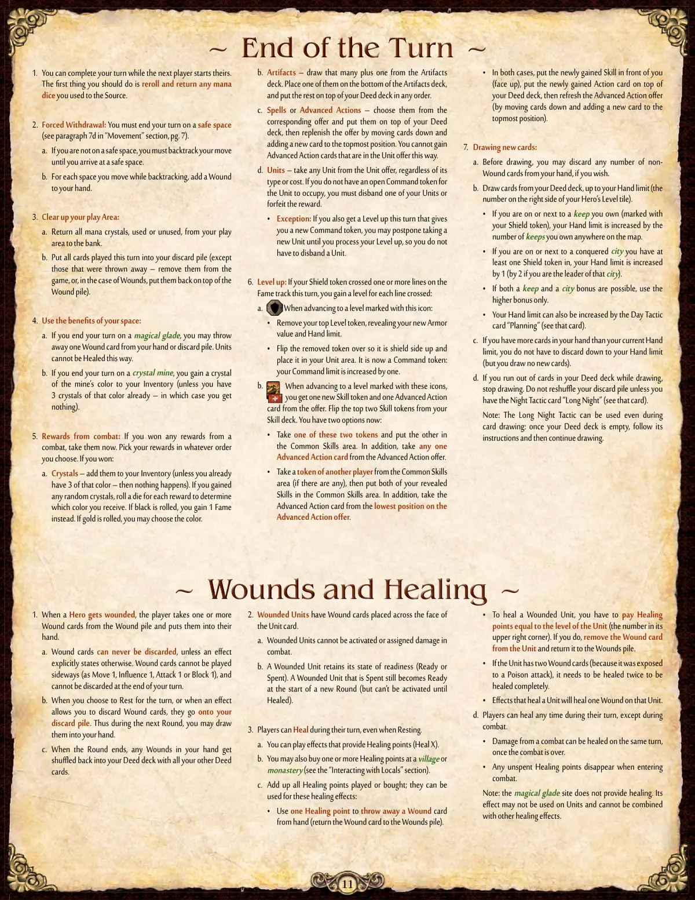
- 你可以在下一位玩家开始他们的回合时完成你的回合。
你应该做的第一件事是重新投掷你用来获取法力骰并将它们归还给源点。
2. 强制撤退：你必须在一个安全空间结束你的回合（参见"移动"章节中的第7d段，第7页）。
a. 如果你不在一个安全空间，你必须回溯你的移动直到到达一个安全空间。
b. 在回溯过程中每移动一个空间，在你的手牌中添加一张创伤牌。
3. 清理你的游戏区域：
a. 将使用过或未使用过的所有法力水晶从你的游戏区域归还到银行。
b. 将本回合打出的所有卡牌放入你的弃牌堆（除了那些被丢弃的——将它们移出游戏，或者，如果是创伤牌，将它们放回创伤堆的顶部）。
- 使用你所在空间的好处：
a. 如果你在魔法林地结束你的回合，你可以从你的手牌或弃牌堆中丢弃一张创伤牌。单位不能以此方式被治疗。
b. 如果你在水晶矿结束你的回合，你获得一个该矿颜色的水晶到你的背包中（除非你已经拥有3个该颜色的水晶——在这种情况下你什么也得不到）。
5. 战斗奖励：如果你从战斗中获得任何奖励，现在就领取它们。按照你选择的顺序挑选你的奖励。如果你获得了：
a. 水晶——将它们添加到你的背包中（除非你已经拥有3个该颜色的水晶——那么什么也不会发生）。如果你获得了任何随机水晶，为每个奖励投掷骰子以确定你接收的颜色。如果投出黑色，你获得1点声望代替。如果投出金色，你可以选择颜色。
b. 圣物——从圣物牌库中抽取该数量加一张。将其中一张放在圣物牌库的底部，其余的以任意顺序放在你的功业牌库的顶部。
c. 法术或高级行动——从相应的选择中选择它们并将它们放在你的功业牌库的顶部，然后通过向下移动卡牌并在最顶部位置添加一张新卡牌来补充选择。你不能通过这种方式获得单位选择中的高级行动卡牌。
d. 单位——从单位选择中获取任何单位，无论其类型或费用。如果你没有可用的指挥令牌供该单位占据，你必须解散你的一个单位或放弃奖励。
• 例外：如果你在本回合也获得了一次升级，为你提供了新的指挥令牌，你可以延迟获取新单位直到你处理你的升级，这样你就不必解散一个单位。
- 升级：如果你的盾牌令牌在本回合跨越了声望轨道上的一条或多条线，你每跨越一条线就获得一个等级：
a.
当晋升到带有此图标的等级时：
• 移除你顶部的等级令牌，揭示你的新的护甲值和手牌上限。
• 将移除的令牌翻转过来使其盾牌面朝上，
将其放入你的单位区域。它现在是一个指挥指示物：你的指挥上限增加一。
b.
当晋升到标有这些图标的等级时，你从提供中获得一个新技能指示物和一张高级行动卡。翻开你技能牌库顶部的两张技能指示物。你现在有两个选项：
• 从这两张指示物中选择一张，另一张放入公共技能区域。此外，从高级行动提供中任意拿取一张高级行动卡。
• 从公共技能区域拿取另一位玩家的一个指示物（如果有的话），然后将你揭示的两张技能都放入公共技能区域。此外，从高级行动提供的最下方位置拿取高级行动卡。
• 在两种情况下，都将新获得的技能放在你面前（正面朝上），将新获得的行动卡放在你的功业牌库顶部，然后刷新高级行动提供（通过向下移动卡片并在最上方位置添加一张新卡）。
7. 抽取新卡：
a. 在抽牌前，如果你愿意，可以弃掉手牌中任意数量的非创伤卡。
b. 从你的功业牌库抽牌，直到达到你的手牌上限（你英雄等级板块右侧的数字）。
• 如果你位于你拥有的城堡内或旁边（标记有你的盾牌指示物），你的手牌上限增加你在地图上拥有的城堡数量。
• 如果你位于你征服的城市内或旁边，且你在该城市至少有一个盾牌指示物，你的手牌上限增加1（如果你是该城市的领袖，则增加2）。
• 如果同时可以获得城堡和城市奖励，只使用较高的奖励。
• 你的手牌上限也可以通过日战术卡"规划"增加（参见该卡）。
c. 如果你手牌数量超过当前手牌上限，你不必弃牌至手牌上限（但你不会抽新牌）。
d. 如果抽牌时你的功业牌库已空，停止抽牌。除非你有夜战术卡"长夜"（参见该卡），否则不要洗混你的弃牌堆。
注意：长夜战术甚至在抽牌过程中也可以使用：一旦你的功业牌库为空，遵循其说明然后继续抽牌。
~ 回合结束
回合结束
回合结束 ~
1. 当英雄受伤时，玩家从创伤堆拿取一张或多张创伤卡放入手牌。
a. 除非效果明确说明，否则创伤卡永远不能被弃掉。创伤卡不能横向放置（作为移动1、影响力1、攻击1或阻挡1），也不能在你的回合结束时被弃掉。
b. 当你选择在本回合休息，或者某个效果允许你弃掉创伤卡时，它们进入你的弃牌堆。因此，在下一轮中，你可能会将它们抽入手牌。
c. 当轮结束时，你手牌中的任何创伤牌都会与你的其他事迹牌一起洗回事迹牌库中。
2. 受伤的单位会将创伤牌放置在单位牌的正面。
a. 受伤的单位无法在战斗中被激活或分配伤害。
b. 受伤的单位保持其准备状态（准备或已使用）。一个已使用的受伤单位仍会在新一轮开始时变为准备状态（但在被治愈前无法被激活）。
- 玩家可以在他们的回合期间进行治疗，即使在休息时也可以。
a. 你可以提供治疗点（治疗X）的效果。
b. 你也可以在村庄或修道院购买一个或多个治疗点（参见"与当地人互动"部分）。
c. 将所有已使用或购买的治疗点相加；它们可用于以下治疗效果：
• 使用一个治疗点来弃掉一张手牌中的创伤牌（将创伤牌返回到创伤牌堆）。
• 要治愈一个受伤的单位，你必须支付等于该单位等级的治疗点（其右上角的数字）。如果这样做，请从单位上移除创伤牌并将其返回到创伤牌堆。
• 如果单位有两张创伤牌（因为它受到了毒攻击），需要治愈两次才能完全治愈。
• 治愈单位的效果会治愈该单位上的一张创伤牌。
d. 玩家可以在他们的回合期间的任何时间进行治疗，战斗期间除外。
• 战斗造成的伤害可以在同一回合进行治疗，一旦战斗结束。
• 任何未使用的治疗点在进入战斗时会消失。
注意：魔法林地站点不提供治疗。其效果不能用于单位，也不能与其他治疗效果结合使用。
~
g
创伤与治疗
创伤与治疗
创伤与治疗 ~
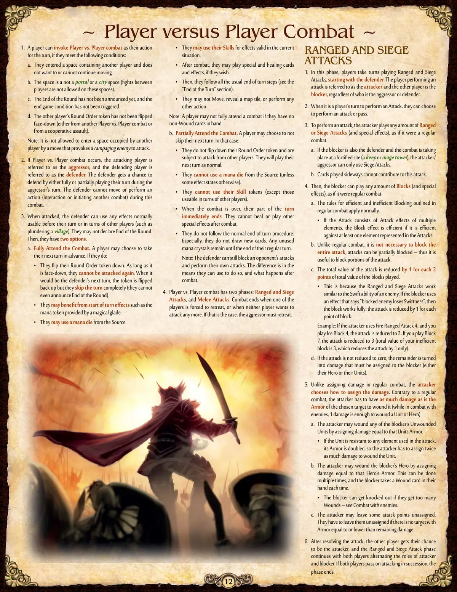
- 玩家可以在其回合中发起玩家对战，如果他们满足以下条件：
a. 他们进入了一个包含其他玩家的空间，并且不想或无法继续移动。
b. 该空间不是传送门或城市空间（不允许在这些空间进行玩家对战）。
c. 尚未宣布回合结束，且游戏结束条件未被触发。
d. 另一位玩家的回合顺序指示物未被翻面（无论是由于其他玩家对战还是合作攻击）。
注意：不允许通过引发狂暴敌人攻击的移动方式进入被其他玩家占据的空间。
- 如果发生玩家对战，攻击玩家被称为攻击者，防守玩家被称为防守者。防守者有机会在攻击者的回合期间通过完全或部分进行自己的回合来进行防御。在战斗期间，防守者不能移动或执行行动（互动或发起其他战斗）。
- 当被攻击时，防守者可以使用通常在其回合前或其他玩家回合中可使用的任何效果（例如掠夺村庄）。他们不能宣布回合结束。然后，他们有两个选择。
a. 完全参与战斗。玩家可以选择提前进行他们的下一个回合。如果他们这样做：
• 他们将回合顺序指示物翻面。只要它是面朝下的，他们就不能再次被攻击。当轮到防守者的下一个回合时，指示物会被翻回正面，但他们完全跳过该回合（他们甚至不能宣布回合结束）。
• 他们可以受益于回合开始时的效果，例如魔法林地提供的魔力指示物。
• 他们可以使用源中的魔力骰子。
• 他们可以使用他们的技能以获得适用于当前情况的效果。
• 战斗后，如果他们愿意，可以打出特殊和治疗卡牌及效果。
• 然后，他们遵循所有常规的回合结束步骤（参见"回合结束"部分）。
• 他们不能移动、揭示板块或执行任何其他行动。
注意：如果玩家手中没有非伤害卡牌，他们不能完全参与战斗。
b. 部分参与战斗。玩家可以选择不跳过他们的下一个回合。在这种情况下：
• 他们不将回合顺序指示物翻面，并可能受到其他玩家的攻击。他们将正常进行下一个回合。
• 他们不能使用源中的魔力骰子（除非某些效果另有说明）。
• 他们不能使用他们的技能指示物（除那些在其他玩家回合中可使用的）。
• 当战斗结束时，他们回合的部分立即结束。战斗后他们不能治疗或使用其他特殊效果。
• 它们不遵循正常的回合结束程序。
特别是，它们不会摸新牌。任何未使用的水晶将保留到其常规回合结束。
注意：防御方仍然可以阻挡对手的攻击并执行自己的攻击。区别在于他们可以使用的方法，以及战斗后发生的事情。
- 玩家对战战斗有两个阶段：远程和围攻攻击，以及近战攻击。当一名玩家被迫撤退，或当两名玩家都不想再攻击时，战斗结束。如果是这种情况，攻击方必须撤退。
远程和围攻
攻击
1. 在此阶段，玩家轮流进行远程和围攻攻击，从防御方开始。执行攻击的玩家被称为攻击者，另一名玩家被称为阻挡者，无论谁是攻击方或防御方。
- 当轮到玩家执行攻击时，他们可以选择执行攻击或跳过。
3. 要执行攻击，攻击者可以打出任意数量的远程或围攻攻击（以及特殊效果），就像常规战斗一样。
a. 如果阻挡者同时也是防御方，并且战斗发生在有防御工事的地点（城堡或法师塔），攻击者/攻击方只能使用围攻攻击。
b. 侧放的卡牌不能用于此次攻击。
- 然后，阻挡者可以打出任意数量的阻挡（以及特殊效果），就像常规战斗一样。
a. 常规战斗中关于高效和低效阻挡的规则正常适用。
• 如果攻击包含多种元素的攻击效果，如果阻挡效果对攻击中至少一种元素有效，则该阻挡效果是高效的。
b. 与常规战斗不同，不需要阻挡整个攻击，攻击可以被部分阻挡——因此阻挡攻击的一部分是有用的。
c. 攻击的总价值每被阻挡2点就减少1点。
• 这是因为远程和围攻攻击类似于敌人的迅捷能力。如果阻挡者使用一个写着"被阻挡的敌人失去迅捷"的效果，那么阻挡完全生效：攻击每被阻挡1点就减少1点。
示例：如果攻击者使用火焰远程攻击4，而你打出冰霜阻挡4，攻击减少到2。如果你打出阻挡7，攻击减少到3（你的低效阻挡总价值为3，仅减少攻击1点）。
d. 如果攻击没有被减少到零，剩余部分将转化为必须分配给阻挡者的伤害（可以是他们的英雄或他们的单位）。
5. 与常规战斗中的伤害分配不同，攻击者选择如何分配伤害。与常规战斗相反
在战斗中，攻击者必须造成与所选目标护甲值相等的伤害才能使其受伤（在与敌人战斗时，1点伤害就足以使单位或英雄受伤）。
a. 攻击者可以通过分配等于该单位护甲值的伤害来攻击阻挡者的任何未受伤单位。
• 如果该单位对攻击中使用的任何元素有抗性，其护甲值将翻倍，因此攻击者必须分配两倍的伤害才能使该单位受伤。
b. 攻击者可以通过分配等于该英雄护甲值的伤害来攻击阻挡者的英雄。这可以多次进行，每次阻挡者都会获得一张伤害牌。
• 如果阻挡者获得过多伤害，可能会被击败——参见与敌人战斗。
c. 攻击者可以保留一些攻击点未分配。如果没有护甲值小于或等于剩余伤害的目标，他们必须保留这些攻击点未分配。
- 解决攻击后，另一名玩家获得成为攻击者的机会，远程攻击和围攻阶段继续进行，两名玩家轮流担任攻击者和阻挡者的角色。如果两名玩家连续放弃攻击，阶段结束。
<!--page:N-->
玩家对战战斗
玩家对战战斗
玩家对战战斗
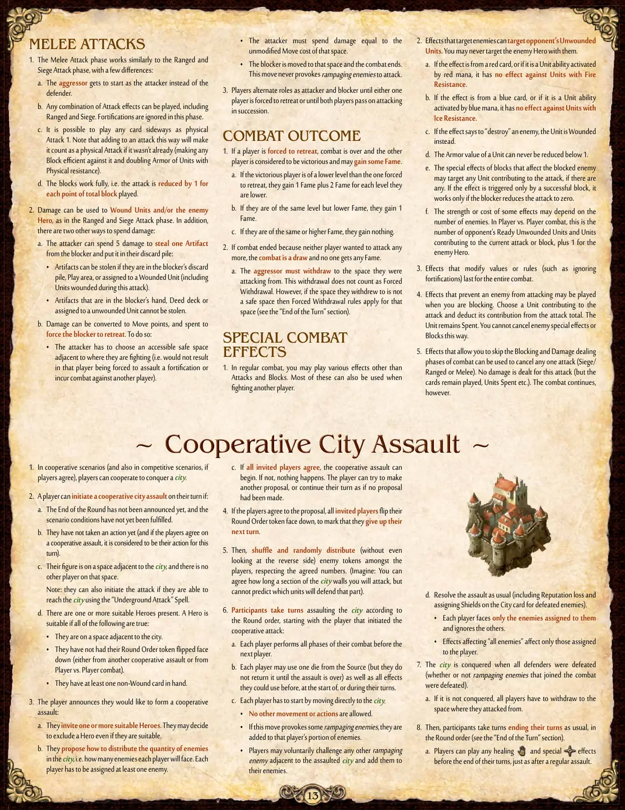
- 在合作模式中（如果玩家同意，在竞争模式中也可以），玩家可以合作征服一座城市。
- 玩家可以在自己的回合发起合作城市突袭，如果：
a. 本轮尚未结束，且场景条件尚未满足。
b. 他们尚未采取任何行动（如果玩家同意合作突袭，则视为他们本回合的行动）。
c. 他们的棋子位于与城市相邻的格上，且该格上没有其他玩家。
注意：如果他们能够使用"地下突袭"法术到达城市，也可以发起攻击。
d. 有一个或多个合适的英雄在场。英雄需满足以下所有条件才算合适：
• 他们位于与城市相邻的格上。
• 他们的回合顺序指示物未被翻到背面（无论是由于其他合作突袭还是玩家对战）。
• 他们手牌中至少有一张非伤卡牌。
3. 玩家宣布他们想要发起合作突袭：
a. 他们邀请一个或多个合适的英雄。他们可以决定排除某个英雄，即使该英雄是合适的。
b. 他们提议如何分配城市中的敌人数量，即每位玩家将面对多少敌人。每位玩家必须至少分配一个敌人。
c. 如果所有被邀请的玩家同意，合作突袭可以开始。如果不同意，则什么都不会发生。玩家可以尝试提出另一个提议，或者继续他们的回合，就像没有提出过提议一样。
- 如果玩家同意该提议，所有被邀请的玩家将他们的回合顺序指示物翻到背面，以标记他们放弃下一回合。
- 然后，洗牌并随机（甚至不看背面）将敌人指示物分配给玩家，按照约定的数量。（想象：你可以同意攻击城市城墙的哪一段，但无法预测哪个单位将防守那部分）。
6. 参与者按照回合顺序轮流攻击城市，从发起合作攻击的玩家开始：
a. 每位玩家在下一位玩家之前完成他们战斗的所有阶段。
b. 每位玩家可以使用来自源骰库的一个骰子（但在突袭结束前不将其归还），以及他们可以在回合前、回合开始时或回合期间使用的所有效果。
c. 每位玩家必须首先直接移动到城市。
• 不允许其他移动或行动。
• 如果这次移动引发了一些失控的敌人，他们将被添加到该玩家的敌人部分中。
• 玩家可以自愿挑战任何其他与被攻击城市相邻的失控敌人，并将他们添加到自己的敌人中。
d. 像往常一样解决袭击（包括声望损失和为被击败的敌人在城市卡牌上分配护盾）。
• 每位玩家只面对分配给他们的敌人，忽略其他敌人。
• 影响"所有敌人"的效果只影响分配给该玩家的那些敌人。
7. 当所有防御者都被击败时（无论加入战斗的暴走敌人是否被击败），城市被征服。
a. 如果城市未被征服，所有玩家必须撤退到他们发起攻击的区域。
8. 然后，参与者按照轮的顺序轮流结束他们的回合，如往常一样（参见"回合结束"部分）。
a. 玩家可以在回合结束前使用任何治疗和特殊效果，就像在常规袭击后一样。
近战攻击
1. 近战攻击阶段与远程攻击和围攻攻击阶段类似，但有几点不同：
a. 攻击者开始时作为攻击者而非防御者。
b. 可以使用任何组合的攻击效果，包括远程和围攻。在此阶段要塞被忽略。
c. 可以将任何卡牌横向放置作为物理攻击1。请注意，以这种方式增加攻击会使攻击成为物理攻击（如果它还不是的话），使任何格挡效果对其有效，并使具有物理抗性的单位的护甲值翻倍。
d. 格挡完全有效，即每点总格挡值会使攻击减少1点。
2. 伤害可以用来使单位受伤和/或敌方英雄受伤，如在远程攻击和围攻攻击阶段中一样。此外，还有两种其他使用伤害的方式：
a. 攻击者可以花费5点伤害来从防御者那里偷取一件神器并将其放入自己的弃牌堆：
• 如果神器在防御者的弃牌堆、游戏区域或分配给受伤的单位（包括在此攻击中受伤的单位）中，则可以被偷取。
• 位于防御者手牌、契约牌库或分配给未受伤单位中的神器不能被偷取。
b. 伤害可以转换为移动点数，并用于迫使防御者撤退。为此：
• 攻击者必须选择一个与他们战斗位置相邻的可及安全区域（即不会导致该玩家被迫袭击要塞或与其他玩家发生战斗）。
• 攻击者必须花费等于该区域未修改移动成本的伤害值。
• 防御者被移动到该区域，战斗结束。此移动不会引发暴走敌人的攻击。
- 玩家轮流担任攻击者和防御者，直到有玩家被迫撤退，或者两名玩家连续放弃攻击。
战斗结果
- 如果有玩家被迫撤退，战斗结束，另一方
玩家被视为胜利者，并获得一些声望。
a. 如果胜利玩家的等级低于被迫撤退的玩家，他们获得1点声望，再加上他们等级每低一级获得的2点声望。
b. 如果他们的等级相同但声望较低，他们获得1点声望。
c. 如果他们的声望相同或更高，他们什么也得不到。
2. 如果战斗结束是因为双方玩家都不想再攻击，那么战斗为平局，没有人获得任何声望。
a. 攻击者必须撤退到他们攻击前的区域。这次撤退不视为强制撤退。然而，如果他们撤退到的区域不是安全区域，则该区域适用强制撤退规则（参见"回合结束"部分）。
特殊战斗效果
- 在常规战斗中，你可以使用除了攻击和阻挡之外的各种效果。其中大多数也可以在与其他玩家战斗时使用。
- 针对敌人的效果可以针对对手的未受伤单位。你绝不能使用它们针对敌方英雄。
a. 如果效果来自红色卡牌，或者是通过红色法力激活的单位能力，它对具有火焰抗性的单位无效。
b. 如果效果来自蓝色卡牌，或者是通过蓝色法力激活的单位能力，它对具有冰霜抗性的单位无效。
c. 如果效果说要"摧毁"敌人，则单位改为受伤。
d. 单位的护甲值永远不会降低到1以下。
e. 影响被阻挡敌人的阻挡的特殊效果可以针对任何参与攻击的单位（如果有）。如果效果仅在成功阻挡时触发，则只有在阻挡者将攻击降至零时才生效。
f. 某些效果的强度或成本可能取决于敌人数量。在玩家对战玩家战斗中，这是对手的未受伤准备单位数和参与当前攻击或阻挡的单位数，再加上敌方英雄的1。
- 修改数值或规则的效果（如忽略防御工事）持续整个战斗。
- 阻止敌人攻击的效果可以在你阻挡时使用。选择一个参与攻击的单位并从攻击总数中扣除其贡献。该单位保持已使用状态。你不能以此方式取消敌人的特殊效果或阻挡。
- 允许你跳过战斗中的阻挡和造成伤害阶段的效果可以用来取消任何一次攻击（围攻/远程或近战）。这次攻击不造成任何伤害（但卡牌已打出，单位已使用等）。然而，战斗继续进行。
~ 合作城市突袭
合作城市突袭
合作城市突袭 ~
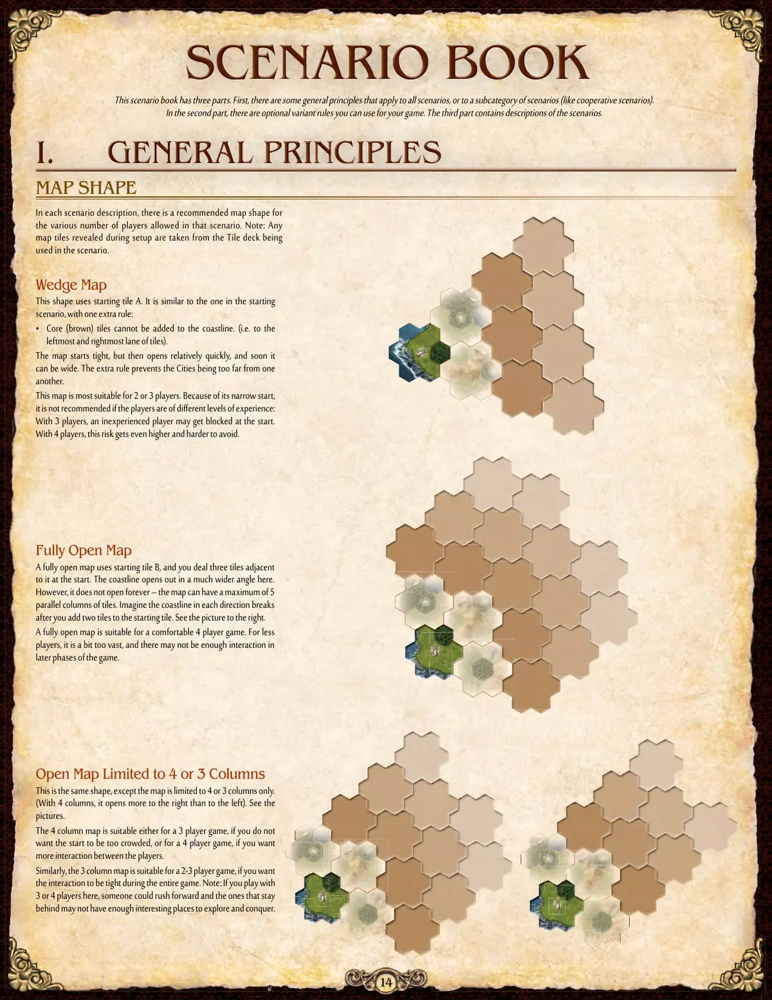
I.
基本原则
I.
基本原则
I.
基本原则
场景手册
场景手册
场景手册
本场景手册包含三个部分。首先，有一些适用于所有场景或某一子类场景（如合作场景）的基本原则。
第二部分是你可以用于游戏的可选变体规则。第三部分包含场景描述。
楔形地图
此形状使用起始板块A。它与起始场景中的地图相似，但有一条额外规则：
• 核心（棕色）板块不能添加到海岸线上。（即不能添加到板块的最左列和最右列）。
地图开始时较为紧凑，但随后会相对快速地展开，很快就会变得宽阔。这条额外规则防止城市之间相距过远。
此地图最适合2或3名玩家。由于其狭窄的开局，如果玩家经验水平不同，则不推荐使用：对于3名玩家，经验不足的玩家可能在开局时被阻挡。对于4名玩家，这种风险会更高且更难避免。
地图形状
地图形状
在每个场景描述中，都有一个针对该场景允许的不同玩家数量的推荐地图形状。注意：设置过程中揭示的任何地图板块都取自该场景中使用的板块牌库。
完全开放地图
完全开放地图使用起始板块B，并在开始时向其周围放置三块板块。海岸线在这里以更宽的角度展开。然而，它不会无限展开——地图最多可以有5列平行的板块。想象一下，在每个方向上，当你向起始板块添加两块板块后，海岸线就会中断。参见右侧图片。
完全开放地图适合舒适的4人游戏。对于较少的玩家，它可能过于广阔，游戏后期阶段可能缺乏足够的互动。
限制为4列或3列的开放地图
这是相同的形状，只是地图仅限制为4列或3列。（4列时，右侧比左侧展开更多）。参见图片。
4列地图适合3人游戏，如果你不希望开局过于拥挤；也适合4人游戏，如果你希望玩家之间有更多互动。
类似地，3列地图适合2-3人游戏，如果你希望在整个游戏过程中保持紧密互动。注意：如果你在这里使用3人或4人游戏，有人可能会快速前进，而落后的人可能没有足够有趣的地方可以探索和征服。
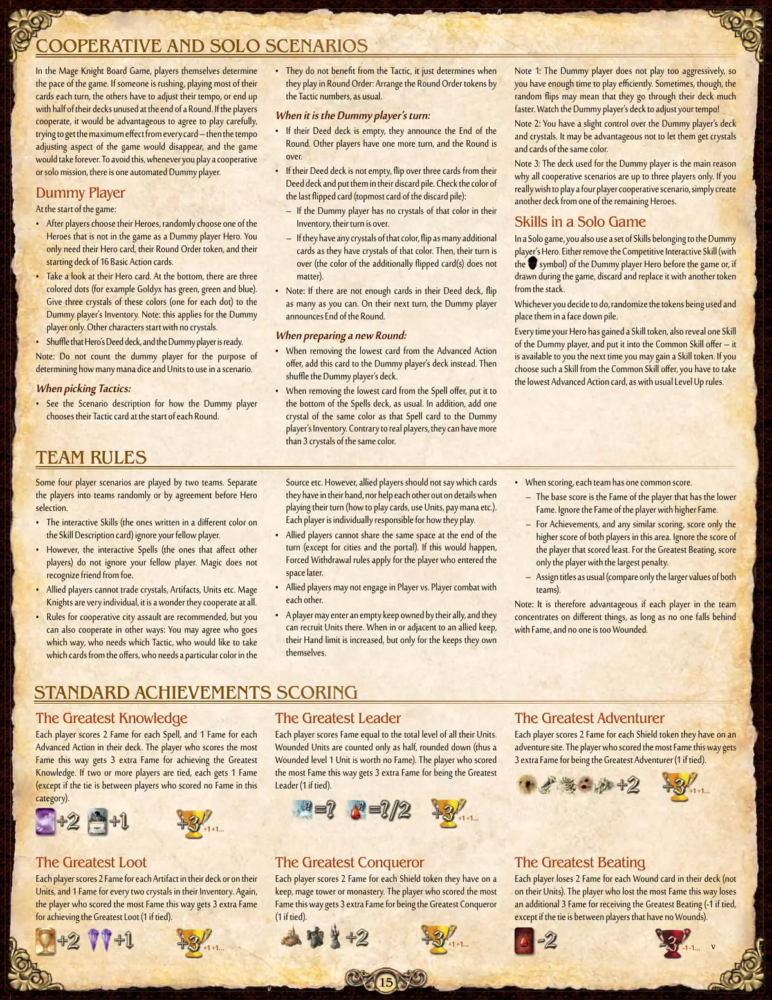
在《Mage Knight 棋盘游戏》中，玩家自己决定游戏的节奏。如果有人节奏过快，每回合打出大部分卡牌，其他人就必须调整自己的节奏，否则在一轮结束时会有半副牌库未使用。如果玩家合作，谨慎地尝试从每张卡牌中获得最大效果是有利的——那么游戏的节奏调整方面就会消失，游戏将永远进行下去。为了避免这种情况，每当进行合作或单人任务时，会有一个自动的虚拟玩家。
虚拟玩家
游戏开始时：
• 玩家选择完英雄后，随机选择一个未在游戏中使用的英雄作为虚拟玩家的英雄。你只需要他们的英雄卡牌、他们的回合顺序标记和他们的起始牌库（16张基础行动卡牌）。
• 查看他们的英雄卡牌。底部有三个彩色圆点（例如 Goldyx 有绿色、绿色和蓝色）。给虚拟玩家的库存中三个这些颜色的水晶（每个圆点一个）。注意：这仅适用于虚拟玩家。其他角色开始时没有水晶。
• 洗混该英雄的功业牌库，虚拟玩家就准备好了。注意：在确定场景中要使用多少法力骰子和单位时，不要计算虚拟玩家。
选择战术时：
• 查看场景描述，了解虚拟玩家如何在每轮开始时选择他们的战术卡牌。
• 他们不受益于战术，战术只决定他们在回合顺序中的出牌时间：像往常一样根据战术数字排列回合顺序标记。
轮到虚拟玩家时：
• 如果他们的功业牌库为空，他们宣布回合结束。其他玩家再进行一个回合，然后本轮结束。
• 如果他们的功业牌库不为空，从他们的功业牌库中翻开三张牌并将其放入他们的弃牌堆。检查最后翻开的牌的颜色（弃牌堆最上面的牌）：
– 如果虚拟玩家的库存中没有该颜色的水晶，他们的回合结束。
– 如果他们有该颜色的水晶，再翻出与他们该颜色水晶数量相同的牌。然后，他们的回合结束（额外翻开的牌的颜色无关紧要）。
• 注意：如果他们的功业牌库中没有足够的牌，就尽可能多地翻牌。在他们的下一个回合，虚拟玩家宣布回合结束。
准备新一轮时：
• 当从高级行动牌区移除最低等级的牌时，将这张牌添加到虚拟玩家的牌库中。然后洗混虚拟玩家的牌库。
• 当从法术牌区移除最低等级的牌时，像往常一样将其放到法术牌库的底部。此外，添加一张
与那张法术卡相同颜色的水晶到虚拟玩家的库存中。与真实玩家不同，他们可以拥有超过3个相同颜色的水晶。
注释1：虚拟玩家不会过于激进地游戏，因此你有足够的时间高效地游戏。不过，有时随机翻转可能意味着他们更快地用完他们的牌库。注意观察虚拟玩家的牌库来调整你的节奏！
注释2：你对虚拟玩家的牌库和水晶有轻微的控制权。不让他们获得相同颜色的水晶和卡牌可能是有利的。
注释3：用于虚拟玩家的牌库是为什么所有合作场景最多只能有三名玩家的主要原因。如果你真的想要玩一个四人合作场景，只需从剩余的英雄中创建另一个牌库即可。
单人游戏中的技能
在单人游戏中，你也会使用属于虚拟玩家英雄的一组技能。在游戏前移除虚拟玩家英雄的竞争互动技能（带有y符号），或者在游戏过程中如果抽到，则将其弃置并从堆栈中替换为另一个指示物。
无论你决定怎么做，都要随机化使用的指示物并将它们面朝下放置成一堆。
每当你的英雄获得一个技能指示物时，也要揭示一个虚拟玩家的技能，并将其放入公共技能池中 - 它在你下次可能获得技能指示物时可供你使用。如果你从公共技能池中选择这样的技能，你必须按照常规升级规则，选择最低级的进阶行动卡。
行动和单人场景
合作
一些四人场景由两个队伍进行。在英雄选择前，随机或通过协议将玩家分成队伍。
• 互动技能（技能描述卡中以不同颜色书写的技能）会忽略你的队友。
• 然而，互动法术（影响其他玩家的法术）不会忽略你的队友。魔法不分辨敌友。
• 联盟玩家不能交换水晶、神器、单位等。魔法骑士非常个人主义，他们能够合作就已经是个奇迹了。
• 建议使用合作城市攻击规则，但你们也可以以其他方式合作：你们可以约定谁走哪条路，谁需要哪种战术，谁想从池中选择哪些卡牌，谁在源中需要特定颜色等。然而，联盟玩家不应说出他们手中有哪些卡牌，也不应在回合进行时在细节上互相帮助（如何出牌、使用单位、支付法力等）。每个玩家对自己如何游戏负责。
• 联盟玩家不能在回合结束时占据同一个空间（城市和传送门除外）。如果这种情况发生，
强制撤退规则适用于后进入该区域的玩家。
• 联盟玩家之间不得进行玩家对战。
• 玩家可以进入其盟友拥有的空城堡，并可以在那里招募单位。当在盟友的城堡内或相邻位置时，他们的手牌上限会增加，但仅限于他们自己拥有的城堡。
• 计分时，每个团队有一个共同分数。
– 基础分数是两位玩家中声望较低者的声望。忽略声望较高玩家的声望。
– 对于成就和任何类似计分，仅计算两位玩家在此区域中的较高分数。忽略得分较低玩家的分数。对于最大惩罚，仅计算最大惩罚的玩家。
– 按照惯例授予头衔（仅比较两个团队中的较大值）。
注意：因此，只要没有人因声望落后，也没有人受伤过重，团队中的每位玩家专注于不同的事情是有利的。
团队规则
最伟大的知识
每位玩家为其牌库中的每个法术计2分，为每个高级行动计1分。以此方式获得最多分数的玩家将因获得最伟大的知识而额外获得3分。如果有两位或更多玩家平局，每位玩家获得1分（除非在此类别中得分为零的玩家之间平局）。
+1 +1...
+1 +
标准成就计分
最伟大的战利品
每位玩家为其牌库中或其单位上的每个神器计2分，为其背包中的每两个水晶计1分。同样，以此方式获得最多分数的玩家将因获得最伟大的战利品而额外获得3分（平局时为1分）。
+1 +1...
+1 +
最伟大的领袖
每位玩家获得与其所有单位总等级相等的声望。受伤单位仅计为一半（向下取整，因此受伤的1级单位不产生声望）。以此方式获得最多分数的玩家将因成为最伟大的领袖而额外获得3分（平局时为1分）。
(
)
+1 +1...
+1 +
最伟大的征服者
每位玩家为其在城堡、法师塔或修道院上拥有的每个盾牌指示物计2分。以此方式获得最多分数的玩家将因成为最伟大的征服者而额外获得3分（平局时为1分）。
+1 +1...
+1 +
(
d).)
最伟大的冒险家
每位玩家为其在冒险地点上拥有的每个盾牌指示物计2分。以此方式获得最多分数的玩家将因成为最伟大的冒险家而额外获得3分（平局时为1分）。
+1 +1...
+1 +
最伟大的惩罚
每位玩家为其牌库中的每张受伤卡牌失去2分（不在其单位上的）。以此方式失去最多分数的玩家将因遭受最伟大的惩罚而额外失去3分（平局时为-1分，
- 除非平局发生在没有创伤的玩家之间)。
-1 -1...
-1 -1
-
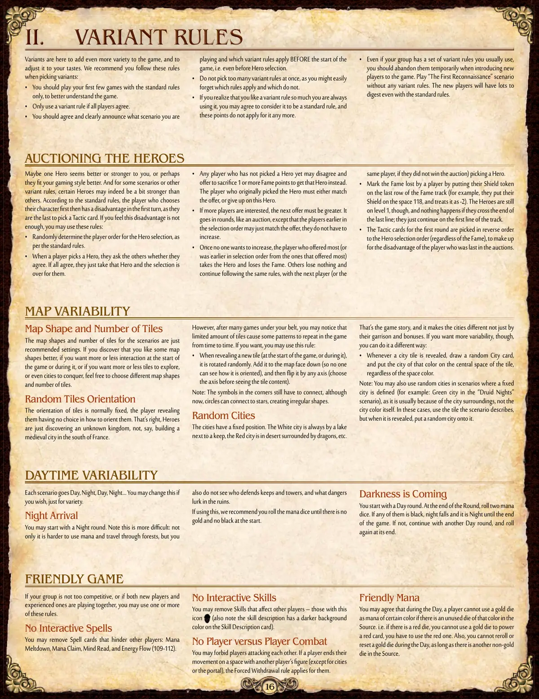
每个场景遵循白天、夜晚、白天、夜晚的顺序...如果你愿意，可以改变这个顺序，只是为了增加变化。
夜晚到达
你可以以一个夜晚回合开始。请注意这会更困难：不仅使用魔法和在森林中旅行更困难，而且你也看不到谁在防守城堡和塔楼，以及废墟中潜伏着什么危险。
如果使用此规则，我们建议你在开始时掷魔法骰子，直到没有金色和黑色为止。
黑暗将至
你以一个白天回合开始。在回合结束时，掷两个魔法骰子。如果其中任何一个骰子是黑色，则夜晚降临，游戏将保持夜晚状态直到结束。如果不是，则继续进行另一个白天回合，并在其结束时再次掷骰。
白天变体
如果你们小组不是太有竞争性，或者新手玩家和有经验的玩家一起玩，你可以使用以下一条或多条规则。
无互动法术
你可以移除妨碍其他玩家的法术卡牌：魔法熔毁、魔法夺取、心灵读取和能量流动（109-112）。
无互动技能
你可以移除影响其他玩家的技能——那些带有此图标的技能（同时请注意技能描述在技能描述卡上背景颜色更深）。
无玩家对战
你可以禁止玩家互相攻击。如果一个玩家结束移动时位于另一个玩家棋子所在的格子上（城市和传送门除外），则强制撤退规则适用于他们。
友好魔法
你可以约定在白天，如果源中有一个未使用的该颜色骰子，玩家就不能使用金色骰子作为特定颜色的魔法。即，如果有一个红色骰子，你不能使用金色骰子为红色卡牌供能，你必须使用红色骰子。此外，只要源中还有其他非金色骰子，你在白天就不能重新掷或重置金色骰子。
友好游戏
地图形状和板块数量
场景的地图形状和板块数量只是推荐设置。如果你发现更喜欢某些地图形状，如果你想在游戏开始时或过程中增加或减少互动，或者你想增加或减少需要探索的板块数量，甚至是需要征服的城市，请随意选择不同的地图形状和板块数量。
随机板块方向
板块的方向通常是固定的，揭示板块的玩家没有选择如何定向它们的权利。没错，英雄们只是在发现一个未知王国，比如说，不是在法国南部建造一座中世纪城市。
然而，在你玩过多次游戏后，你可能会注意到有限的板块数量会导致游戏中不时出现一些重复的模式。如果你愿意，可以使用这条规则：
• 当揭示一个新板块时（在游戏开始时或过程中），
它被随机旋转。将它面朝下添加到地图上（这样没有人能看到它的朝向），然后沿任意轴翻转它（在看到板块内容前选择轴）。
注意：角落的符号仍然必须连接，但现在，圆圈可以与星星连接，形成不规则形状。
随机城市
城市有固定位置。白色城市总是在湖泊旁边靠近城堡，红色城市在沙漠中被龙环绕，等等。这就是游戏故事，它使城市不仅因其驻军和奖励而不同。但是，如果你想要更多变化，你可以用不同的方式：
• 每当揭示一个城市板块时，抽取一张随机的城市卡，并将该颜色的城市放在板块的中心格上，不管格的颜色是什么。
注意：在定义了固定城市的场景中你也可以使用随机城市（例如："德鲁伊之夜"场景中的绿色城市），这通常是因为城市周围环境，而不是城市颜色本身。在这些情况下，使用场景描述的板块，但当它被揭示时，在上面放置一个随机城市。
地图变化性
变体规则
变体规则
变体规则
变体规则
变体规则
变体规则
变体为游戏增加更多变化，并使其适应你的喜好。我们建议你在选择变体规则时遵循以下规则：
• 你应该只使用标准规则玩前几局游戏，以更好地理解游戏。
• 只有所有玩家同意才能使用变体规则。
• 你应该在游戏开始前就商定并明确宣布你要玩什么场景以及应用哪些变体规则，即在英雄选择之前。
• 不要一次选择太多变体规则，因为你很容易忘记哪些规则适用，哪些不适用。
• 如果你发现你非常喜欢某个变体规则以至于总是使用它，你可以同意将其视为标准规则，这些点不再适用于它。
• 即使你的小组有一套通常使用的变体规则，在向新玩家介绍游戏时，你应该暂时放弃它们。不要使用任何变体规则玩"第一次侦察"场景。即使使用标准规则，新玩家也有很多需要消化。
也许某个英雄对你来说似乎更好或更强，或者它们更适合你的游戏风格。对于某些场景或其他变体规则，某些英雄确实可能比其他英雄强一些。根据标准规则，第一个选择自己角色的玩家在第一回合处于劣势，因为他们是最后一个选择战术卡的。如果你觉得这个劣势不够，你可以使用这些规则：
• 随机确定英雄选择的玩家顺序，
遵循标准规则。
• 当一名玩家选择一位英雄时，他们会询问其他人是否同意。如果所有人都同意，他们就直接选择该英雄，他们的选择就此结束。
• 任何尚未选择英雄的玩家可以不同意，并提出牺牲1点或更多声望点数来获得该英雄。最初选择该英雄的玩家必须要么匹配这个提议，要么放弃这位英雄。
• 如果有更多玩家感兴趣，下一个提议必须更高。这以轮次进行，类似于拍卖，但选择顺序靠前的玩家可以只是匹配提议，他们不必提高出价。
• 一旦没有人愿意提高出价，出价最高的玩家（或在出价最高的玩家中选择顺序靠前的玩家）获得该英雄并失去声望。其他玩家不会失去任何东西，并继续遵循相同的规则，由下一位玩家（或如果他们没有赢得拍卖的同一玩家）选择一位英雄。
• 通过将玩家的盾牌指示物放在声望轨道的最后一行来标记玩家失去的声望（例如，他们将盾牌放在118格，并将其视为-2）。然而，英雄仍然在1级，如果他们穿过最后一行的末端，什么也不会发生；他们只是继续在轨道的第一行前进。
• 第一轮的策略卡选择顺序与英雄选择顺序相反（无论声望如何），以弥补在拍卖中最后选择的玩家的劣势。
英英拍卖
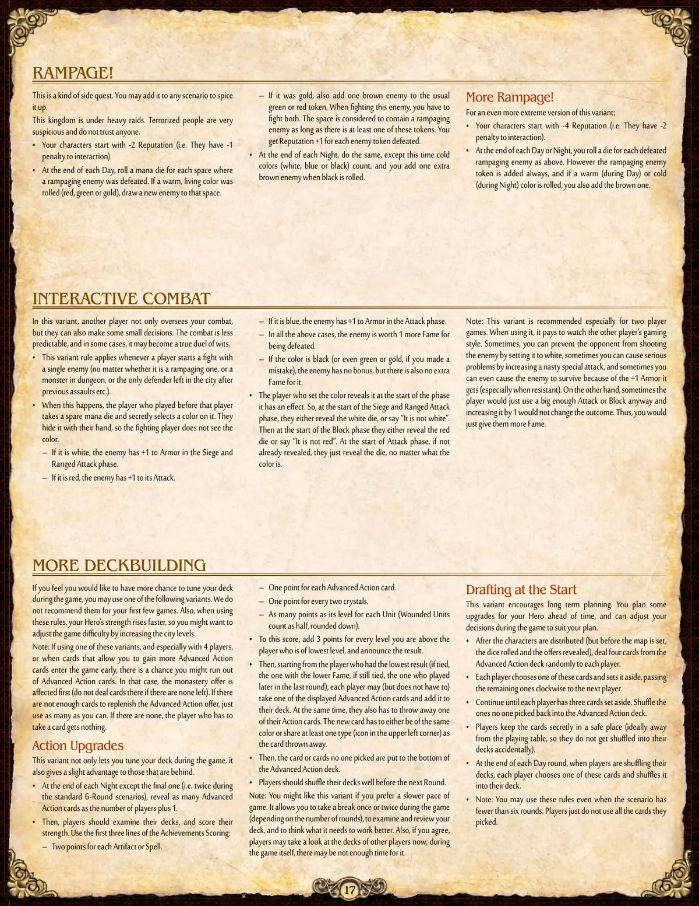
这是一种支线任务。你可以将它添加到任何场景中以增加趣味性。
这个王国遭受着猛烈袭击。惊恐的人们非常多疑，不相信任何人。
• 你的角色起始时拥有-2声望（即他们在互动上有-1惩罚）。
• 在每个白天结束时，为每个被击败的暴走敌人所在空间掷一个法力骰。如果掷出温暖的有生命色彩（红色、绿色或金色），则在该空间生成一个新敌人。
– 如果是金色，还要在通常的绿色或红色指示物上添加一个棕色敌人。当战斗这个敌人时，你必须同时战斗两者。只要至少有一个这些指示物，该空间就被视为包含暴走敌人。每击败一个敌人指示物，你获得+1声望。
• 在每个夜晚结束时，执行相同操作，但这次是冷色调（白色、蓝色或黑色）有效，并且当掷出黑色时，额外添加一个棕色敌人。
更多暴走！
对于这个变体的更极端版本：
• 你的角色起始时拥有-4声望（即他们在互动上有-2惩罚）。
• 在每个白天或夜晚结束时，如上所述，为每个被击败的暴走敌人掷一个骰。但是暴走敌人指示物总是会被添加，如果掷出温暖色彩（白天）或冷色调（夜晚），还会额外添加一个棕色敌人。
暴走！
在这个变体中，另一位玩家不仅监督你的战斗，他们还可以做出一些小决定。战斗的可预测性降低，在某些情况下，它可能成为真正的智慧对决。
• 当玩家开始与单个敌人战斗时（无论它是暴走敌人、地下城中的怪物，或是先前袭击后城中仅存的防御者等），此变体规则适用。
• 当这种情况发生时，在该玩家之前行动的玩家拿一个备用法力骰，并秘密选择一个颜色。他们用手遮住它，所以战斗的玩家看不到颜色。
– 如果是白色，敌人在围攻和远程攻击阶段护甲+1。
– 如果是红色，敌人攻击力+1。
– 如果是蓝色，敌人在攻击阶段护甲+1。
– 在上述所有情况下，击败该敌人会获得额外1点声望。
– 如果颜色是黑色（或者如果你搞错了，甚至是绿色或金色），敌人没有加成，但也没有额外声望。
• 设置颜色的玩家在它有效果的阶段开始时揭示它。因此，在围攻和远程攻击阶段开始时，他们要么揭示白色骰，要么说"不是白色"。然后在格挡阶段开始时，他们要么揭示红色骰，要么说"不是红色"。在攻击阶段开始时，如果尚未揭示，他们直接揭示骰子，无论是什么颜色。
注意：此变体特别推荐用于两人游戏。使用时，留意对手的游戏风格。有时，你可以通过将其设置为白色来阻止对手攻击敌人，有时通过增强一个棘手的特殊攻击可以造成严重问题，有时甚至因为敌人获得的+1护甲（尤其是当敌人有抗性时）而使其存活。另一方面，有时玩家无论如何都会使用足够大的攻击或防御，增加1点不会改变结果。因此，你只是给了他们更多的声望。
互动战斗
如果你想在游戏中有更多机会调整你的牌库，你可以使用以下变体之一。我们不推荐你在前几局游戏中使用这些规则。此外，使用这些规则时，你的英雄力量增长更快，因此你可能需要通过提高城市等级来调整游戏难度。
注意：如果使用这些变体之一，特别是当有4名玩家，或者允许你获得更多高级行动卡牌的卡牌在游戏早期进入游戏时，你可能会用完高级行动卡牌。在这种情况下，修道院的提议首先受到影响（如果没有剩余卡牌，不要在那里发牌）。如果没有足够的卡牌补充高级行动提议，就尽可能多地使用。如果没有，必须拿取卡牌的玩家将一无所获。
行动升级
这个变体不仅让你在游戏过程中调整牌库，还给落后者带来轻微优势。
• 在每个夜晚结束时，除了最后一个夜晚（即在标准6轮场景中为两次），展示数量为玩家数量加1的高级行动卡牌。
• 然后，玩家应检查他们的牌库，并计算他们的力量。使用成就计分的前三行：
- 每件神器或法术得2分。 <ul> <li>每张高级行动卡得1分。</li> <li>每两个水晶得1分。</li> <li>每个单位（受伤单位算一半，向下取整）按其等级获得相应分数。</li> </ul>
• 在这个分数基础上，每高于最低等级的玩家一级加3分，并宣布结果。
• 然后，从得分最低的玩家开始（如果平局，则声望较低的玩家，如果仍然平局，则在上一轮中后行动的玩家），每位玩家可以（但不必须）选择展示的一张高级行动卡牌并将其加入自己的牌库。同时，他们必须丢弃一张自己的行动卡牌。新卡牌必须与丢弃的卡牌颜色相同，或至少共享一种类型（左上角的图标）。
• 然后，无人选择的卡牌被放到牌库底部。
高级行动牌库
• 玩家应在下一轮开始前充分洗牌他们的牌库。
注意：如果你喜欢较慢的游戏节奏，你可能会喜欢这个变体。它允许你在游戏期间休息一到两次（取决于轮数），检查和回顾你的牌库，并思考它需要如何改进才能更好地运作。此外，如果玩家同意，现在可以查看其他玩家的牌库；在游戏过程中，可能没有足够的时间来做这件事。
开始时的选牌
这个变体鼓励长期规划。你可以提前为你的英雄规划一些升级，并在游戏过程中调整你的决策以适应你的计划。
• 在角色分配后（但在设置版图、掷骰子和揭示奖励之前），从高级行动牌库中随机向每位玩家发四张牌。
• 每位玩家从这些牌中选择一张并放在一边，将剩下的牌顺时针传给下一位玩家。
• 继续进行，直到每位玩家都有三张牌放在一边。将无人选择的牌洗回高级行动牌库。
• 玩家将这些牌秘密保存在安全的地方（最好远离游戏桌，以免它们被意外洗入玩家的牌库）。
• 在每个白天回合结束时，当玩家洗牌时，每位玩家选择一张这些牌并将其洗入自己的牌库。
• 注意：即使场景少于六轮，你也可以使用这些规则。玩家只是不会使用他们选择的所有牌。
更多牌库构筑
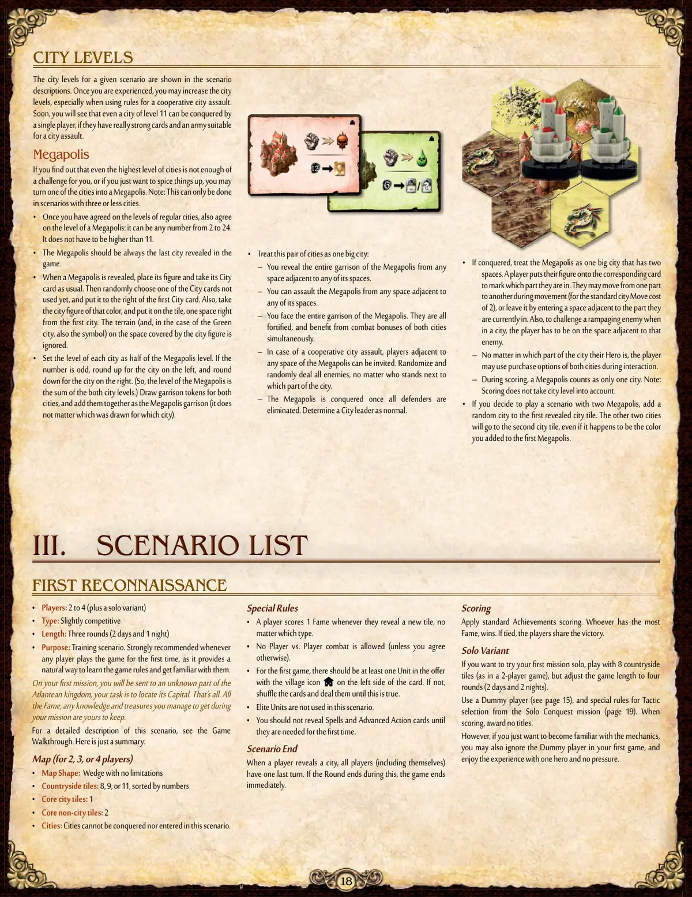
• 玩家数：2至4人（含单人变体）
• 类型：轻度竞争
• 长度：三轮（2天1夜）
• 目的：训练场景。强烈建议任何玩家第一次游玩此游戏时使用，因为它提供了一种自然的方式来学习游戏规则并熟悉它们。
在你的第一个任务中，你将被派往亚特兰蒂王国的未知区域，你的任务是找到其首都。仅此而已。你在任务期间获得的任何声望、知识和宝藏都归你所有。
有关此场景的详细描述，请参见游戏流程指南。这里只是一个摘要：
地图（适用于2、3或4名玩家）
• 地图形状：无限制的楔形
• 乡村板块：8、9或11块，按数字排序
• 核心城市板块：1块
• 核心非城市板块：2块
• 城市：在此场景中，城市无法被征服或进入。
特殊规则
• 玩家每翻开一块新板块，无论类型如何，得1点声望。
• 不允许玩家对战（除非你们同意）。
• 对于第一局游戏，牌堆中至少应有一张左侧带有村庄图标的单位卡。如果没有，洗牌并发牌直到满足此条件。
• 精锐单位在此场景中不使用。
• 法术和高级行动卡应在首次需要时才翻开。
场景结束
当一名玩家翻开城市板块时，所有玩家（包括自己）再进行最后一轮。如果在此期间轮次结束，游戏立即结束。
计分
应用标准成就计分。声望最高的玩家获胜。如果平局，玩家共享胜利。
单人变体
如果你想尝试单人进行第一个任务，使用8块乡村板块（如同2人游戏），但将游戏长度调整为四轮（2天2夜）。
使用虚拟玩家（见第15页），以及单人征服任务中的特殊战术选择规则（第19页）。计分时不授予头衔。
然而，如果你只是想熟悉游戏机制，你也可以在第一局游戏中忽略虚拟玩家，用一个英雄无压力地享受体验。
第一次侦察
第一次侦察
III. 场景列表
III. 场景列表
III. 场景列表
给定场景的城市等级在场景描述中显示。一旦你有了经验，可以提高城市等级，特别是在使用合作城市攻击规则时。很快，你将看到即使是11级城市也可以被单个玩家征服，如果他们拥有非常强大的卡牌和适合城市攻击的军队。
大都会
如果你发现即使最高等级的城市也不够挑战，
如果你想增加挑战性，或者只是想让游戏更有趣，你可以将其中一个城市变成超级都市（Megapolis）。注意：这只能在拥有三个或更少城市的情况下进行。
• 一旦你们确定了常规城市的等级，也要确定超级都市的等级：可以是2到24之间的任何数字。它不必高于11。
• 超级都市应该是游戏中最后揭示的城市。
• 当揭示超级都市时，按照常规放置其指示物并获取其城市卡。然后随机选择一张未使用的城市卡，放在第一张城市卡的右侧。同时，获取该颜色的城市指示物，并将其放在板块上，从第一个城市向右一格。被城市指示物覆盖的格子的地形（以及绿色城市的情况下的符号）被忽略。
• 将每个城市的等级设置为超级都市等级的一半。如果数字是奇数，左边的城市向上取整，右边的城市向下取整。（因此，超级都市的等级是两个城市等级的总和。）为两个城市抽取驻军指示物，并将它们相加作为超级都市的驻军（哪个城市的驻军被抽取并不重要）。
• 将这对城市视为一个大城市：
– 你可以从与超级都市任何空间相邻的任何空间揭示其全部驻军。
– 你可以从与超级都市任何空间相邻的任何空间攻击超级都市。
– 你将面对超级都市的全部驻军。他们都已设防，同时受益于两个城市的战斗加成。
– 在合作城市攻击的情况下，可以邀请与超级都市任何空间相邻的玩家。随机化并随机分配所有敌人，无论谁站在城市的哪个部分。
– 一旦所有防御者被消灭，超级都市就被征服。像往常一样确定城市领袖。
• 如果被征服，将超级都市视为一个有两个空间的大城市。玩家将其指示物放在相应的卡牌上，标记他们所在的部分。他们可以在移动期间从一个部分移动到另一个部分（标准城市移动成本为2），或者通过进入与其当前部分相邻的空间来离开它。此外，当在城市中挑战失控的敌人时，玩家必须位于与该敌人相邻的空间上。
– 无论英雄在城市的哪个部分，玩家在互动期间都可以使用两个城市的购买选项。
– 在计分时，超级都市只算作一个城市。注意：计分不考虑城市等级。
• 如果你决定玩一个有两个超级都市的场景，在第一个揭示的城市板块上添加一个随机城市。另外两个城市将放在第二个城市板块上，即使它碰巧是相同的颜色。
你添加到了第一个 Megapolis（大都会）。
城市等级
城市
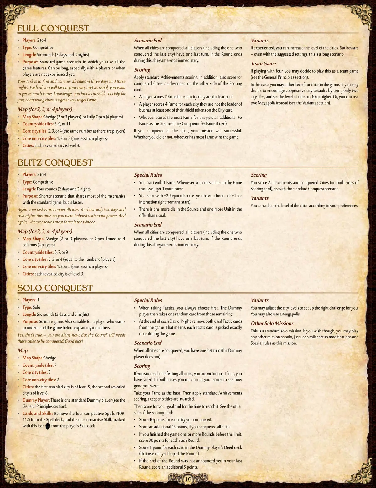
• 玩家数：2至4人
• 类型：竞技
• 长度：四个回合（2天2夜）
• 目的：简短场景，与标准游戏共享大部分机制，但速度更快。
同样，你的任务是征服所有城市。这次你只有两天两夜，因此你被赋予了额外力量。同样， whoever scores most Fame is the winner.
地图（2、3或4人）
• 地图形状：楔形（2人或3人），或开放限制为4列（4人）
• 乡村板块：6、7或9个
• 核心城市板块：2、3或4个（与玩家数量相同）
• 核心非城市板块：1、2或3个（比玩家数少一个）
• 城市：每个已揭示的城市都是3级。
特殊规则
• 你开始时有1点声望。每当你在声望轨道上跨越一条线，你获得1点额外声望。
• 你开始时有+2声望（即你从一开始就拥有+1的互动加成）。
• 源头中有一个额外的骰子，报价中有一个额外的单位。
场景结束
当所有城市都被征服时，所有玩家（包括征服最后一个城市的玩家）再进行一个最后的回合。如果在此期间回合结束，游戏立即结束。
计分
你获得成就和征服的城市（在计分卡的两面），如同标准征服场景一样。
变体
你可以根据自己的喜好调整城市的等级。
闪电征服
• 玩家数：2至4人
• 类型：竞技
• 长度：六个回合（3天3夜）
• 目的：标准游戏场景，你使用所有游戏功能。可能很长，特别是当有4名玩家或玩家尚无经验时。
你的任务是在三天三夜内寻找并征服所有城市。你们每个人都将独自行动，和往常一样，你想获得尽可能多的声望、知识和战利品。幸运的是，征服城市是获得声望的好方法。
地图（2、3或4人）
• 地图形状：楔形（2人或3人），或完全开放（4人）
• 乡村板块：8、9或11个
• 核心城市板块：2、3或4个（与玩家数量相同）
• 核心非城市板块：1、2或3个（比玩家数少一个）
• 城市：每个已揭示的城市都是4级。
场景结束
当所有城市都被征服时，所有玩家（包括征服最后一个城市的玩家）再进行一个最后的回合。如果在此期间回合结束，游戏立即结束。
计分
应用标准成就计分。此外，也计征服的城市，如计分卡另一面所述。
• 玩家对其作为领导者的每个城市获得7点声望。
• 玩家对其不是领导者但在城市卡上至少有一个其盾牌指示物的每个城市获得4点声望。
• 谁为这次征服获得最多的声望，将额外获得+5点声望，作为"最伟大的征服者"（如果平局则+2点声望）。
如果你征服了所有城市，你的任务就成功了。
无论你是否成功，声望最高的玩家赢得游戏。
变体
如果你是经验丰富的玩家，可以提高城市的等级。但要小心
- 即使使用建议的设置，这也是一个较长的场景。
团队游戏
如果是四名玩家，你可以决定将其作为团队游戏进行
（参见"通用原则"部分）。
在这种情况下，你可以选择保留四座城市在游戏中，或者
决定只使用两个城市板块来鼓励合作的城市进攻，并将城市等级设置为10或更高。或者，你也可以使用两个大都市（参见"变体"部分）。
完全征服
完全征服
• 玩家：1人
• 类型：单人模式
• 长度：六个回合（3个白天和3个夜晚）
• 目的：单人游戏。也适合想要在向他人解释游戏前先了解游戏的玩家。
是的，这是真的 - 现在你独自一人。但议会仍然需要征服这些城市。祝你好运！
地图
• 地图形状：楔形
• 乡村板块：7个
• 核心城市板块：2个
• 核心非城市板块：2个
• 城市：第一个揭示的城市等级为5，第二个揭示的城市等级为8。
• 虚拟玩家：有一个标准虚拟玩家（参见"通用原则"部分）。
• 卡牌与技能：从法术牌库中移除四张竞争性法术（109-112），并从玩家的技能牌库中移除一张互动性技能，标记有此图标 。
特殊规则
• 当选择战术时，你总是先选择。然后虚拟玩家从剩余的牌中随机抽取一张。
• 在每个白天或夜晚结束时，将两张已使用的战术牌移出游戏。这意味着，每张战术牌在游戏中只会被抽取一次。
场景结束
当所有城市都被征服时，你将进行最后一回合（虚拟玩家不进行）。
计分
如果你成功击败所有城市，你就取得了胜利。如果没有，你就失败了。在这两种情况下，你都可以计算你的分数，看看你表现得有多好。
以你的声望作为基础。然后应用标准成就计分，但不授予头衔。
然后为你的目标和达成目标的时间计分。参见计分卡的另一面：
• 每征服一座城市获得10分。
• 如果征服了所有城市，额外获得15分。
• 如果你在限制回合前一个或多个回合结束游戏，每个这样的回合获得30分。
• 为虚拟玩家的功业牌堆中每张牌（在本回合尚未翻开的）计1分。
• 如果在你的最后一回合中尚未宣布回合结束，额外获得5分。
变体
你可以调整城市等级来为你设置合适的挑战。
你也可以使用大都会。
其他单人任务
这是一个标准的单人任务。不过，你也可以将任何其他任务作为单人游戏进行，只需使用与此任务类似的设置修改和特殊规则即可。
单人征服
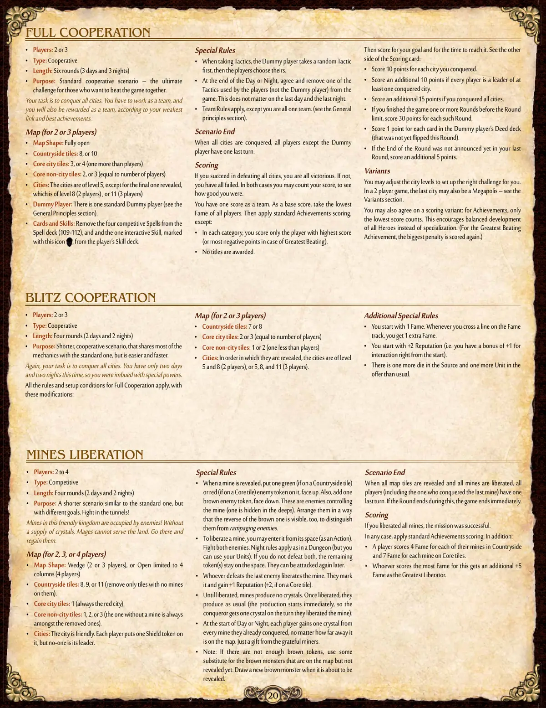
• 玩家数：2至4人
• 类型：竞技
• 长度：四个回合（2天和2夜）
• 目的：一个与标准模式相似但目标不同的较短场景。在隧道中战斗！
这个友好王国的矿场被敌人占领！没有水晶供应，法师们无法服务这片土地。去那里夺回它们。
地图（2、3或4人使用）
• 地图形状：楔形（2人或3人），或开放型（限制为4列）（4人）
• 乡村板块：8、9或11个（仅移除没有矿场的板块）。
• 核心城市板块：1个（总是红色城市）
• 核心非城市板块：1、2或3个（没有矿场的那个总是被移除的）。
• 城市：城市是友好的。每位玩家在其上放置一个盾牌指示物，但没有人是它的领导者。
特殊规则
• 当矿场被揭示时，在其上放置一个绿色（如果在乡村板块上）或红色（如果在核心板块上）的敌方指示物，正面朝上。同时，添加一个棕色的敌方指示物，背面朝上。这些是控制矿场的敌人（一个隐藏在深处）。将它们排列成棕色指示物的背面也可见，以区别于暴走的敌人。
• 要解放矿场，你可以从其所在区域进入（作为一个行动）。与两个敌人战斗。夜间规则如同在地下城中适用（但你可以使用你的单位）。如果你没有击败两个敌人，剩余的指示物会留在该区域。它们可以稍后被再次攻击。
• 击败最后一个敌人的玩家解放矿场。他们标记它并获得+1声望（如果在核心板块上则为+2）。
• 在被解放前，矿场不生产水晶。一旦被解放，它们照常生产（生产立即开始，因此征服者在他们解放矿场的回合获得一个水晶）。
• 在白天或夜晚开始时，每位玩家从他们已经征服的每个矿场获得一个水晶，无论它在地图上相距多远。这只是来自感激矿工的一份礼物。
• 注意：如果棕色指示物不足，使用地图上尚未揭示的一些棕色怪物作为替代。当即将揭示时，抽取一个新的棕色怪物。
场景结束
当地图所有板块都被揭示且所有矿场都被解放时，所有玩家（包括征服最后一个矿场的玩家）进行最后一回合。如果在此期间回合结束，游戏立即结束。
计分
如果你解放了所有矿场，任务成功。
无论如何，应用标准成就计分。此外：
• 玩家在乡村的每个矿场获得4点声望，在核心板块上的每个矿场获得7点声望。
• 在此获得最多声望的玩家额外获得+5点声望，作为最伟大的解放者。
矿场解放
• 玩家数：2或3人
• 类型：合作
• 长度：六个回合（3天和3夜）
• 目的：标准合作场景——为那些想要一起战胜游戏的玩家准备的终极挑战。你的任务是征服所有城市。你们必须作为一个团队工作，并且也将作为一个团队获得奖励，根据你们最薄弱的环节和最佳成就来决定。
地图（2人或3人游戏）
• 地图形状：完全开放
• 乡村板块：8个或10个
• 核心城市板块：3个或4个（比玩家数多一个）
• 核心非城市板块：2个或3个（等于玩家数量）
• 城市：城市等级为5级，除了最后揭示的那个城市，其等级为8级（2人游戏）或11级（3人游戏）
• 虚拟玩家：有一个标准虚拟玩家（见通用原则部分）。
• 卡牌与技能：从法术牌库中移除四张竞争性法术（109-112），并从玩家技能牌库中移除一张互动技能，标记有此图标。
特殊规则
• 当选择战术时，虚拟玩家先随机选择一张战术，然后玩家们再选择自己的。
• 在白天或夜晚结束时，商议并移除玩家使用的一张战术（不是虚拟玩家的）出游戏。在最后一天和最后夜晚这不适用。
• 适用团队规则，但你们都是同一个团队。（见通用原则部分）。
场景结束
当所有城市都被征服后，除虚拟玩家外的所有玩家再进行最后一回合。
计分
如果你们成功击败所有城市，你们都取得了胜利。如果没有，你们都失败了。在这两种情况下，你们都可以计算你们的分数，看看你们表现得有多好。
你们有一个团队分数。作为基础分数，取所有玩家中最低的声望。然后应用标准成就计分，但：
• 在每个类别中，只有得分最高的玩家（在最大惨败的情况下是负分最多的玩家）才能得分。
• 不授予头衔。
然后为你们的目标和达到目标的时间计分。见计分卡另一面：
• 每征服一个城市得10分。
• 如果每个玩家至少是已征服一个城市的领导者，额外得10分。
• 如果你们征服了所有城市，额外得15分。
• 如果你们在回合限制前一个或多个回合结束游戏，每个这样的回合得30分。
• 为虚拟玩家的功业牌库中每张卡牌（在本回合尚未翻开的）得1分。
• 如果在你们的最后一个回合中尚未宣布回合结束，额外得5分。
变体
你可以调整城市等级来设置合适的挑战。在2人游戏中，最后一个城市也可以是一个超级都市——见变体部分。
你们也可以商定一个计分变体：对于成就，只计算最低分。这鼓励平衡发展。
所有英雄的通用能力而非专精。（对于"最大打击成就"，再次计算最高罚分。）
完全合作
• 玩家：2人或3人
• 类型：合作
• 长度：四个回合（2天和2夜）
• 目的：较短的合作模式，与标准模式共享大部分机制，但更容易且更快。
同样，你的任务是征服所有城市。这次你只有两天两夜，因此被赋予了特殊能力。
完全合作的所有规则和设置条件适用，但有以下修改：
地图（2人或3人）
• 乡村板块：7或8个
• 核心城市板块：2或3个（等于玩家数量）
• 核心非城市板块：1或2个（比玩家数量少一个）
• 城市：按揭示顺序，城市等级为5和8（2人），或5、8和11（3人）。
额外特殊规则
• 你开始时有1点声望。每当你在声望轨道上跨越一条线，你将获得1点额外声望。
• 你开始时有+2点声望（即从开始起，互动就有+1加成）。
• 源头骰子比平时多一个，招募单位也比平时多一个。
闪电合作
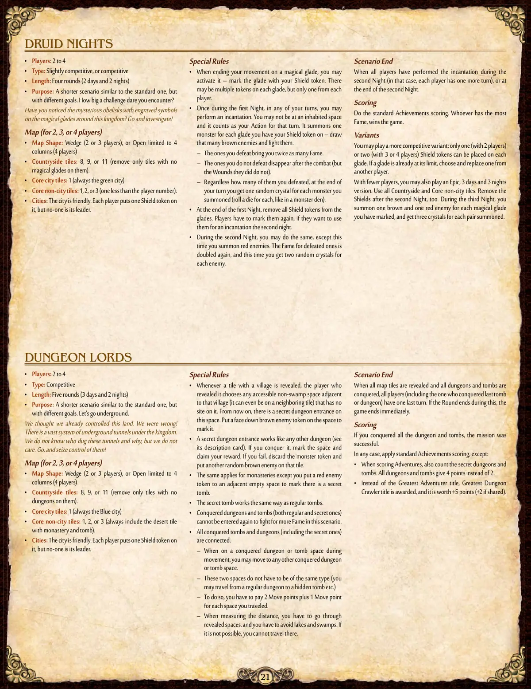
• 玩家数：2至4人
• 类型：竞技
• 长度：五回合（3天2夜）
• 目的：一个与标准模式相似但目标不同的较短场景。让我们深入地下。
我们以为我们已经控制了这片土地。我们错了！
王国下有一个庞大的地下隧道系统。
我们不知道是谁挖掘了这些隧道以及为什么，但我们不在乎。去吧，夺取它们的控制权！
地图（2、3或4人游戏）
• 地图形状：楔形（2人或3人），或开放式但限制为4列（4人）
• 乡村板块：8、9或11块（仅移除没有地下城的板块）。
• 核心城市板块：1块（总是蓝色城市）
• 核心非城市板块：1、2或3块（必须包含带有修道院和陵墓的沙漠板块）。
• 城市：城市是友好的。每位玩家在城上放置一个盾牌指示物，但没有人是它的领袖。
特殊规则
• 每当揭示带有村庄的板块时，揭示该板块的玩家选择该村庄旁边任何可及的非沼泽格（甚至可以在相邻板块上）且该格上没有地点。从现在起，这个格子上有一个秘密地下城入口。在这个格子上放置一个面朝下的棕色敌人指示物来标记它。
• 秘密地下城入口像其他任何地下城一样运作（参见其描述卡）。如果你征服它，标记该格并领取你的奖励。如果你失败，丢弃怪物指示物并在该板块上放置另一个随机的棕色敌人。
• 修道院规则相同，但你将一个红色敌人指示物放置到相邻的空格上，标记那里有一个秘密陵墓。
• 秘密陵墓的运作方式与普通陵墓相同。
• 被征服的地下城和陵墓（包括普通和秘密的）在本场景中不能再次进入以获取更多声望。
• 所有被征服的陵墓和地下城（包括秘密的）都是相连的。
– 在移动过程中，当位于被征服的地下城或陵墓格上时，你可以移动到任何其他被征服的地下城或陵墓格。
– 这两个格不必是相同类型（你可以从普通地下城移动到隐藏陵墓等）
– 为此，你必须支付2点移动点，加上你所经过的每个格1点移动点。
– 测量距离时，你必须经过已揭示的格，并且必须避开湖泊和沼泽。如果不可能，你不能前往那里。
场景结束
当所有地图板块都已揭示且所有地下城和陵墓都被征服时，所有玩家（包括最后征服陵墓或地下城的玩家）再进行最后一回合。如果在此期间回合结束，游戏立即结束。
计分
如果你征服了所有地下城和陵墓，任务就成功了。
无论如何，应用标准成就计分，但：
• 计分冒险时，也要计算秘密地下城和
地城领主
• 玩家数：2至4人
• 类型：略微竞技性，或竞技性
• 长度：四轮（2天2夜）
• 目的：一个与标准场景相似但目标不同的较短场景。你敢面对多大的挑战？你是否注意到这个王国周围魔法林地上那些刻有神秘符号的方尖碑？去调查吧！
地图（2、3或4人）
• 地图形状：楔形（2人或3人），或开放式限制为4列（4人）
• 乡村板块：8、9或11个（仅移除没有魔法林地的板块）。
• 核心城市板块：1个（总是绿色城市）
• 核心非城市板块：1、2或3个（比玩家数少一个）。
• 城市：城市是友好的。每位玩家在其上放置一个盾牌指示物，但没有人是它的领导者。
特殊规则
• 当你的移动结束时停留在魔法林地上，你可以激活它——用你的盾牌指示物标记该林地。每个林地可能有多个指示物，但每位玩家只能有一个。
• 在第一个夜晚期间，在你的任意一个回合中，你可以执行一次咒语。你不能在有居民的格子上，并且这算作你该回合的行动。它会为你每个有盾牌指示物的林地召唤一个怪物——抽取相应数量的棕色敌人并与他们战斗。
– 你击败的敌人会给你带来双倍的声望。
– 你未能击败的敌人在战斗后会消失（但他们造成的伤害不会）。
– 无论你击败了多少敌人，在你的回合结束时，你为每个召唤的怪物获得一个随机水晶（像在怪物巢穴中一样为每个骰子）。
• 在第一个夜晚结束时，从林地上移除所有盾牌指示物。如果玩家想在第二个夜晚使用它们进行咒语，必须重新标记。
• 在第二个夜晚，你可以做同样的事情，但这次你召唤红色敌人。被击败敌人的声望再次翻倍，并且这次每个敌人你会获得两个随机水晶。
场景结束
当所有玩家在第二个夜晚期间执行了咒语（在这种情况下，每位玩家还有一个额外回合），或者在第二个夜晚结束时。
计分
进行标准成就计分。声望最高的玩家赢得游戏。
变体
你可以玩一个更具竞技性的变体：每个林地只能放置一个（2人时）或两个（3人或4人时）盾牌指示物。如果一个林地已经达到限制，选择并替换另一个玩家的一个指示物。
玩家较少时，你也可以玩史诗版，3天3夜。
德鲁伊之夜
DRU
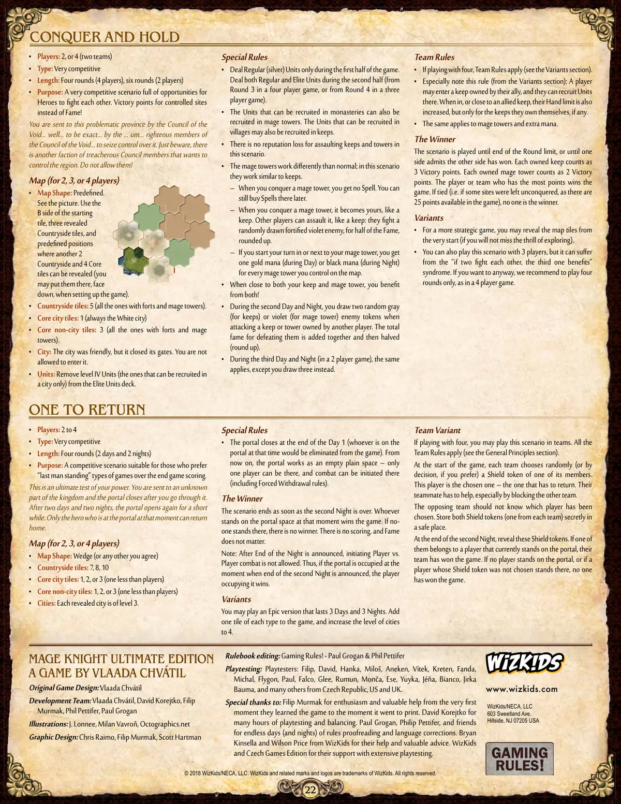
魔法骑士终极版
一款由弗拉达·赫瓦蒂尔设计的游戏
原游戏设计：弗拉达·赫瓦蒂尔
开发团队：弗拉达·赫瓦蒂尔，大卫·科雷特科，菲利普·穆尔马克，菲尔·佩蒂弗，保罗·格罗根
插画：J. Lonnee，米兰·瓦夫罗恩，Octographics.net
平面设计：克里斯·雷莫，菲利普·穆尔马克，斯科特·哈特曼
魔法骑士终极版
• 玩家数：2至4人
• 类型：高度竞争性
• 时长：四轮（2天2夜）
• 目的：一个竞争性场景，适合那些更喜欢"最后一人站立"类型游戏而非终局计分的玩家。这是对你力量的终极考验。你被派往王国的未知区域，穿过后传送门会关闭。两天两夜后，传送门会再次短暂开启。只有那一刻在传送门处的英雄才能回家。
地图（适用于2、3或4名玩家）
• 地图形状：楔形（或任何你们同意的其他形状）
• 乡村板块：7、8、10
• 核心城市板块：1、2或3（比玩家数少一个）
• 核心非城市板块：1、2或3（比玩家数少一个）
• 城市：每个已揭示的城市都是3级。
特殊规则
• 传送门在第一天结束时关闭（当时在传送门上的玩家将被淘汰出游戏）。从此以后，传送门作为一个空旷平原区域运作——只有一个玩家可以在那里，并且可以在那里发起战斗（包括强制撤退规则）。
获胜者
当第二个夜晚结束时，场景立即结束。那一刻站在传送门空间上的玩家赢得游戏。如果没有人在那里，则没有获胜者。没有计分，声望也不重要。
注意：在宣布夜晚结束时，不允许发起玩家对战。因此，如果在宣布第二个夜晚结束时传送门已被占据，占据它的玩家获胜。
变体
你可以玩一个持续3天3夜的史诗版本。为游戏添加每种类型的一个板块，并将城市等级提高到4。
团队变体
如果是四人游戏，你可以以团队形式玩这个场景。所有团队规则适用（参见通用原则部分）。
游戏开始时，每个团队随机选择（或根据决定，如果你愿意）其成员中的一枚盾牌指示物。这个玩家是被选中者——那个必须返回的人。他的队友必须帮助，特别是通过阻挡另一支团队。
对方团队不应知道哪位玩家被选中。将这两枚盾牌指示物（每队一枚）秘密保存在安全的地方。
在第二个夜晚结束时，揭示这些盾牌指示物。如果其中一枚属于当前站在传送门上的玩家，他们的团队就赢得了游戏。如果没有玩家站在传送门上，或者如果
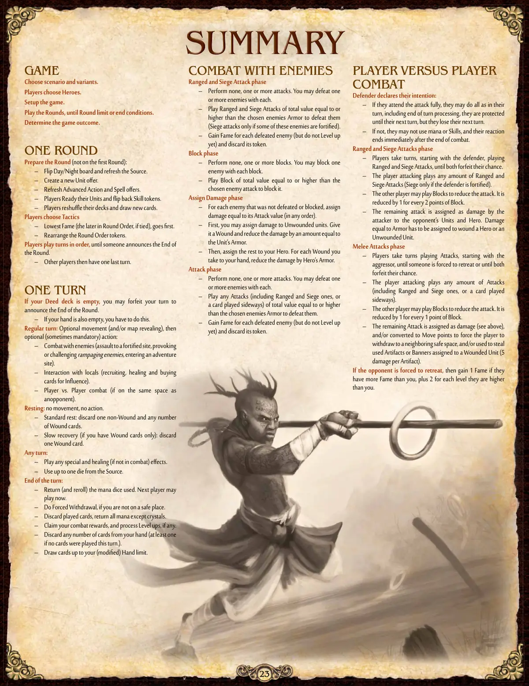
游戏
选择场景和变体。
玩家选择英雄。
设置游戏。
进行轮次，直到达到轮次限制或结束条件。
确定游戏结果。
一轮
准备轮次（第一轮除外）：
– 翻转昼夜板块并刷新源点。
– 创建新的单位提供。
– 刷新高级行动和法术提供。
– 玩家准备他们的单位并翻转回技能指示物。
– 玩家洗牌库并抽新牌。
玩家选择战术
– 声望最低的玩家先行动（如果平局，则按轮次顺序中较后的玩家先行动）。
– 重新排列轮次顺序指示物。
玩家按顺序进行回合，直到有人宣布轮次结束。
– 其他玩家然后可以进行最后一个回合。
一个回合
如果你的功业牌库为空，你可以放弃你的回合来宣布轮次结束。
– 如果你的手牌也为空，你必须这样做。
常规回合：可选移动（和/或揭示地图），然后可选（有时强制）行动：
– 与敌人战斗（攻击加固地点、挑衅或挑战失控的敌人、进入冒险地点）。
– 与当地人互动（招募、治疗和用影响力购买卡牌）。
– 玩家对战（如果与对手在同一格）。
休息：不移动，不行动。
– 标准休息：弃掉一张非创伤牌和任意数量的创伤牌。
– 缓慢恢复（如果你只有创伤牌）：弃掉一张创伤牌。
任何回合：
– 使用任何特殊效果和治疗效果（如果不在战斗中）。
– 使用源点中的最多一个骰子。
回合结束：
– 返回（并重掷）使用的魔力骰子。下一位玩家现在可以行动。
– 如果你不安全的地方，进行强制撤退。
– 弃掉已使用的卡牌，返回所有水晶外的魔力。
– 声称你的战斗奖励，并处理升级（如果有）。
– 弃掉手牌中任意数量的卡牌（如果本回合没有使用任何卡牌，则至少弃一张）。
– 抽牌直到达到（修改后的）手牌上限。
与敌人战斗
远程和围攻阶段
– 进行零个、一个或多个攻击。你可以用每次攻击击败一个或多个敌人。
– 使用总价值等于或高于所选敌人护甲的远程和围攻攻击来击败他们（只有当部分敌人被加固时才能使用围攻攻击）。
– 每击败一个敌人获得声望（但暂不升级）并弃掉其指示物。
格挡阶段
– 进行零个、一个或多个格挡。你可以用每次格挡格挡一个敌人。
– 使用总价值等于或高于所选敌人攻击的格挡来格挡它。
分配伤害阶段
– 对于每个未被击败或被格挡的敌人，分配等于其攻击值的伤害（按任意顺序）。
– 首先，你可以将伤害分配给未受伤的单位。给予
对单位造成一个创伤，并减少等于该单位护甲值的伤害量。
– 然后，将剩余部分分配给你的英雄。每当你为手牌承受一个创伤，就减少等于英雄护甲值的伤害量。
攻击阶段
– 执行零个、一个或多个攻击。你可以每次击败一个或多个敌人。
– 打出总价值等于或高于所选敌人护甲值的任何攻击（包括远程攻击和围攻攻击，或横向打出的卡牌）来击败它们。
– 每击败一个敌人获得声望（但先不要升级），并弃置其指示物。
玩家对战玩家
战斗
防御者声明其意图：
– 如果他们完全参与攻击，他们可以像在自己的回合中一样执行所有操作，包括回合结束处理，他们受到保护直到下一个回合，但他们失去下一个回合。
– 如果不参与，他们不能使用法力或技能，他们的反应在战斗结束后立即结束。
远程和围攻攻击阶段
– 玩家轮流进行，从防御者开始，打出远程和围攻攻击，直到双方都放弃机会。
– 攻击玩家可以打出任意数量的远程和围攻攻击（仅当防御者有防御工事时才能使用围攻攻击）。
– 另一位玩家可以打出阻挡来减少攻击。每2点阻挡值减少1点伤害。
– 剩余的伤害由攻击者分配给对手的单位与英雄。等于护甲值的伤害必须分配给英雄或未受伤的单位才能造成创伤。
近战攻击阶段
– 玩家轮流进行攻击，从攻击者开始，直到有人被迫撤退或双方都放弃机会。
– 攻击玩家可以打出任意数量的攻击（包括远程攻击和围攻攻击，或横向打出的卡牌）。
– 另一位玩家可以打出阻挡来减少攻击。每1点阻挡值减少1点伤害。
– 剩余的攻击被分配为伤害（见上文），/或转换为移动点数迫使对手撤退到相邻的安全区域，/或用于抢夺分配给受伤单位的使用过的神器或旗帜（每个神器5点伤害）。
如果对手被迫撤退，那么如果他们的声望比你多，你获得1点声望，加上他们比你高的每个等级2点声望。
与敌人战斗
总结
总结
总结
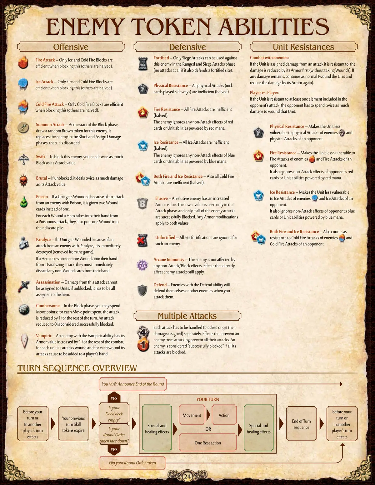
进攻
单位抗性
与敌人战斗：
如果单位受到其抗性的攻击所分配的伤害，伤害首先会减少其护甲值（不造成创伤）。如果仍有任何伤害，则继续正常处理（使单位受到创伤并再次减少其护甲值）。
玩家对战：
如果单位至少抵抗对手攻击中包含的一种元素，对手必须花费两倍多的伤害才能使该单位受到创伤。
麻痹 - 如果单位因来自具有麻痹能力的敌人的攻击而受到创伤，它会被立即摧毁（从游戏中移除）。
如果英雄因麻痹攻击而将一张或多张创伤牌收入手牌，他们必须立即弃掉手牌中所有非创伤牌。
毒药 - 如果单位因来自具有毒药能力的敌人的攻击而受到创伤，它会获得两张创伤牌而不是一张。
对于英雄因毒药攻击而收入手牌的每张创伤牌，他们也会在弃牌堆中放入一张创伤牌。
残暴 - 如果未被阻挡，它造成的伤害是其攻击值的两倍。
迅捷 - 要阻挡这个敌人，你需要两倍于其攻击值的阻挡值。
召唤攻击 - 在阻挡阶段开始时，为这个敌人抽取一个随机的棕色指示物。它在阻挡和分配伤害阶段取代该敌人，然后被弃掉。
冷火攻击 - 只有冷火阻挡在阻挡此攻击时是有效的（其他减半）。
冰霜攻击 - 只有火焰和冷火阻挡在阻挡此攻击时是有效的（其他减半）。
火焰攻击 - 只有冰霜和冷火阻挡在阻挡此攻击时是有效的（其他减半）。
防御
要塞 - 在远程和围攻攻击阶段，只有围攻攻击可用于对抗这个敌人（如果它还防守一个要塞地点，则完全没有攻击）。
物理抗性 - 所有物理攻击（包括横向放置的卡牌）都无效（减半）。
物理抗性 - 使单位对敌人的物理攻击和对手的物理攻击不那么脆弱。
火焰抗性 - 所有火焰攻击都无效（减半）。
敌人会忽略任何红色卡牌或由红色法力驱动的单位能力的非攻击效果。
火焰抗性 - 使单位对敌人的火焰攻击和对手的火焰攻击不那么脆弱。
它还会忽略对手的红色卡牌或由红色法力驱动的单位能力的非攻击效果。
冰霜抗性 - 所有冰霜攻击都无效（减半）。
敌人会忽略任何蓝色卡牌或由蓝色法力驱动的单位能力的非攻击效果。
冰霜抗性 - 使单位对敌人的冰霜攻击和对手的冰霜攻击不那么脆弱。
它还会忽略对手的蓝色卡牌或由蓝色法力驱动的单位能力的非攻击效果。
敌人指示物能力
兼具火焰与冰霜抗性 - 同时所有冷焰攻击效果减半（伤害值减半）。
兼具火焰与冰霜抗性 - 同时也视为对敌人（enemies）和对手（opponent）的冷焰攻击的抗性。
难以捉摸（Elusive） - 难以捉摸的敌人护甲值增加。较低的护甲值仅在攻击阶段使用，且仅在所有敌人攻击都被成功阻挡时才使用。任何护甲修改同时适用于两个数值。
未设防（Unfortified） - 此类敌人的所有阵地防御工事都被忽略。
魔法免疫（Arcane Immunity） - 敌人不受任何非攻击/阻挡效果的影响。直接影响敌人攻击的效果仍然适用。
暗杀（Assassination） - 此攻击造成的伤害不能分配给单位；如果未被阻挡，则必须全部分配给英雄。
笨重（Cumbersome） - 在阻挡阶段，你可以消耗移动点；每消耗1点移动点，攻击在本回合剩余时间内减少1。减少到0的攻击被视为成功阻挡。
多重攻击
每项攻击必须单独处理（阻挡或分配其伤害）。阻止敌人攻击的效果会阻止其所有攻击。如果敌人的所有攻击都被阻挡，则被视为"成功阻挡"。
回合序列概览
你的回合
特殊和治疗效果
特殊和治疗效果
移动
一次休息行动
行动
或者
是
是
你上一个回合的技能指示物过期
你的回合顺序指示物是面朝下的吗？
你的功业牌库是空的吗？
回合结束序列
敌人指示物能力
在你的回合前
或在其他玩家的回合
效果
在你的回合前
或在其他玩家的回合
效果
是
是
翻转你的回合顺序指示物
你可以宣布回合结束